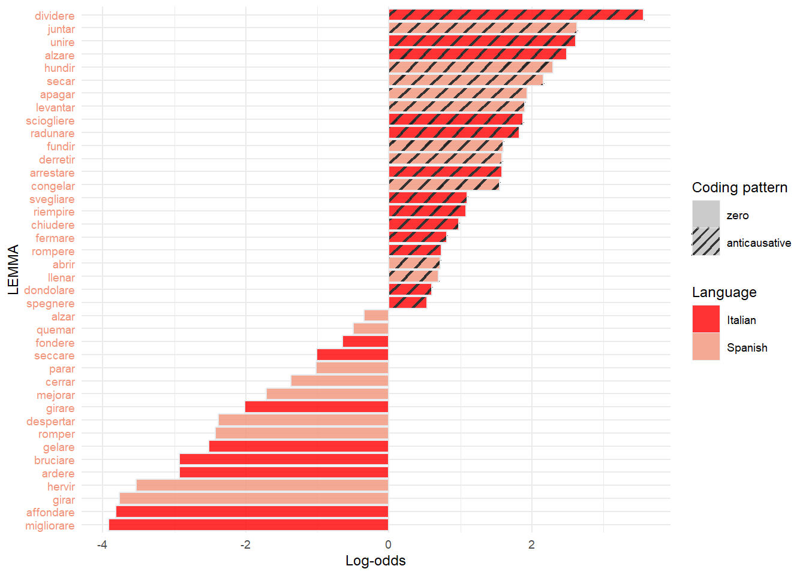
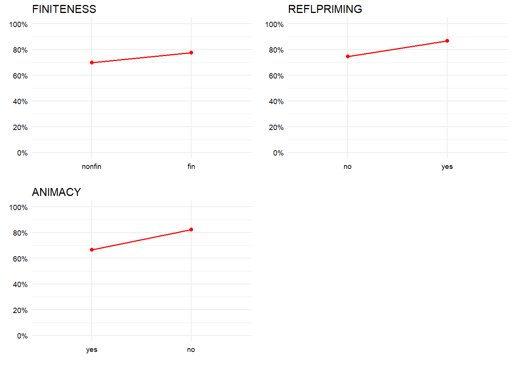
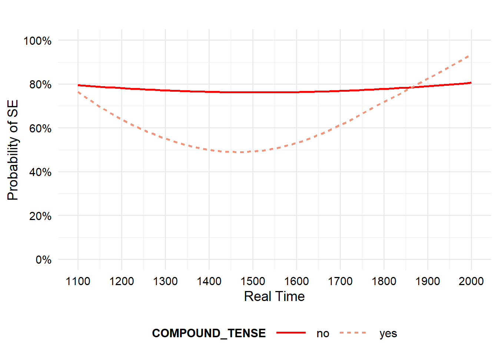
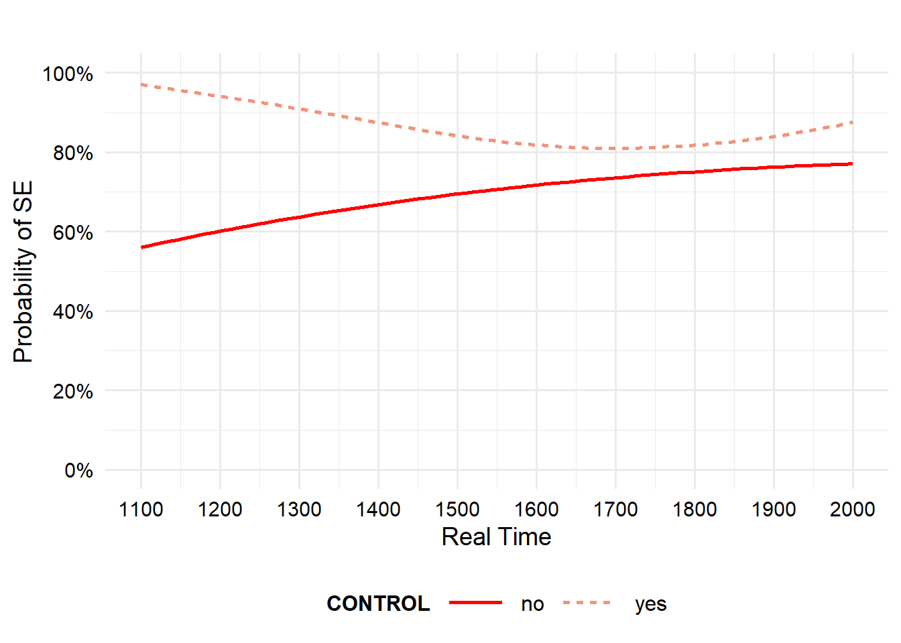
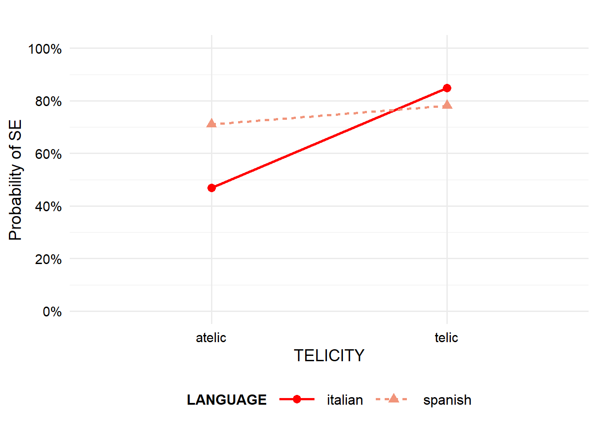
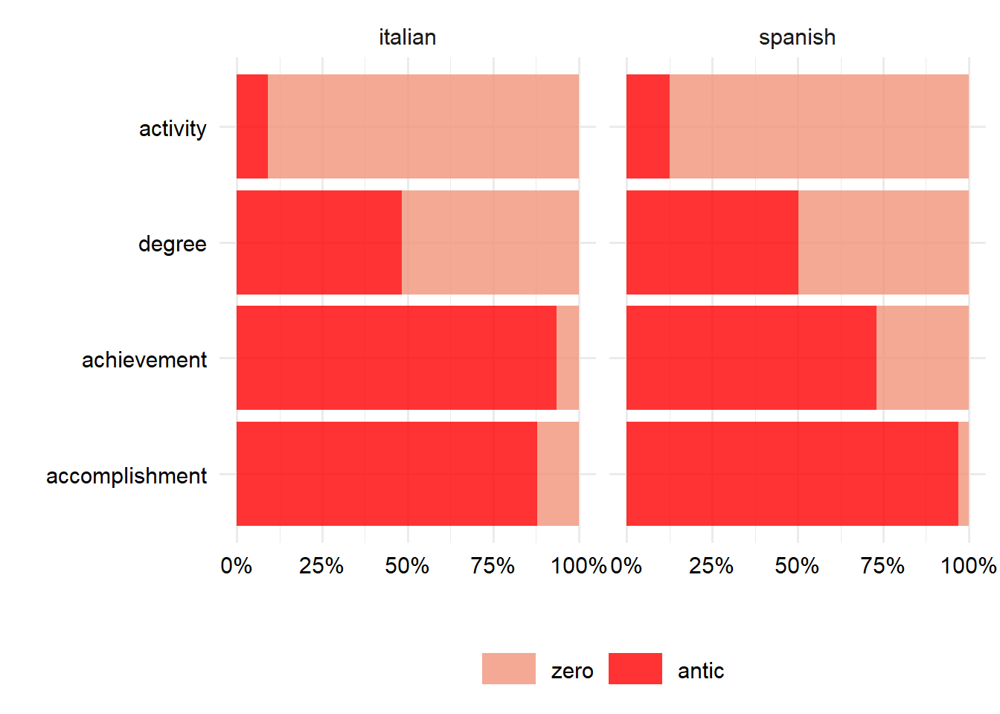
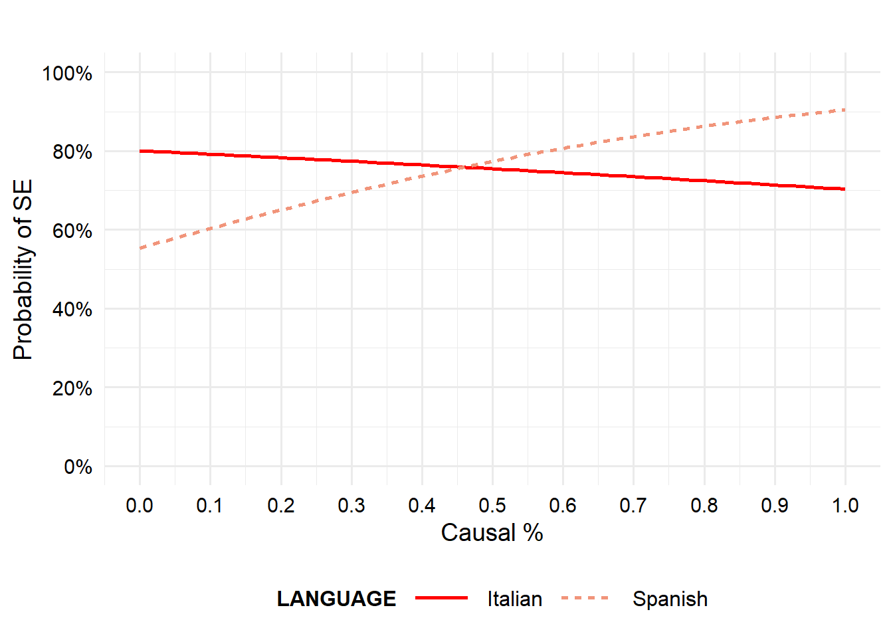

# List of packages used in this document
pkgs <- c("tidyverse", "lme4", "kableExtra", "readxl",
"Boruta", "ranger", "vip", "dplyr",
"purrr", "stringr", "ggpattern")
# Install any missing packages
new_pkgs <- pkgs[!(pkgs %in% installed.packages()[, "Package"])]
if(length(new_pkgs)) install.packages(new_pkgs)
# Load all packages
lapply(pkgs, library, character.only = TRUE)Anticausativization and lability in Romance: a historical corpus study on Spanish and Italian
published in Inglese, Guglielmo, Eugenio Goria and Giulia Mazzola (eds.). Diachronic and Typological Perspectives on Anticausativization. Series: Typological Studies in Language. Amsterdam: John Benjamins.
Guglielmo Inglese ![]()
Giulia Mazzola
Replication materials for: Inglese, Mazzola, Goria, Ferrarotti & Cornillie, “Anticausativization and lability in Romance: a historical corpus study on Spanish and Italian” in Inglese, Mazzola & Goria Diachronic and Typological Perspectives on Anticausativization (Accepted December 2025). Full citation information will be released after publication.

Intro
Load and Prepare Data
data_all <- read_excel("romall_new_VNC_pub.xlsx")
data <- read_excel("Inglese_et_al_noncaus_july25_newVNC_pub.xlsx")Data preparation, summary and NAs check:
data$period <- data$vnc_period_apr25
data$caus_use <- data$caus_use_jul25
summarydata <- fct_count(data$coding)
languagesummary <- fct_count(data$language)
vars_to_check <- c("coding", "telicity", "animacy", "finiteness", "genre", "control", "language",
"reflpriming", "caus_use", "year")
any_na_rows <- data[!complete.cases(data[, vars_to_check]), ]
n_na <- nrow(any_na_rows)
cat("Number of rows with NA in model variables:", n_na, "\n")Number of rows with NA in model variables: 0 na_counts <- colSums(is.na(data[, vars_to_check]))
na_counts[na_counts > 0]named numeric(0)data <- data %>% mutate(across(
c(coding, telicity, animacy, finiteness, compound_tense, genre, time,
control, aspect, language, mood, subjcoding, reflpriming),
~factor(.x)))
levels(data$language) <- str_to_sentence(levels(data$language))Rationale
Object of the study
A comparative diachronic corpus study of Italian and Spanish focuses on the alternation between anticausativization (reflexive marking) and lability as noncausal marking strategies.
Research Questions
- What are the factors that influence the choice between the anticausative and the labile strategies in Italian and Spanish?
- Do these factors change over time?
- Do the strength and relevance of these factors change when Italian and Spanish are compared?
Data
- Italian: MIDIA corpus (D’Achille & Grossmann 2017), ~7.8 million words, balanced across tokens and genres (13th–mid-20th centuries).
- Spanish: Corpus del Diccionario Histórico del Español (CDH, Real Academia Española 2013), Peninsular Spanish only.
- We extracted a sample of occurrences for the Italian and Spanish equivalents of the 20 verb meaning pairs listed in Haspelmath et al. (2014). See paper for the complete procedure.
The complete dataset includes causal and noncausal uses of the verbs extracted, contained in the dataset data_all. For this study we only include noncausal observations and only verbs with variability (data). We therefore removed the verbs with categorical selection of wither anticausative or labile marking. Figure 2 and 3 show the lemmas per language and the proportion of anticausative vs. labile marking, before filtering to only include the vairable contexts.
Figure 1:
# ---- Italian data ----
italian_data <- data_all %>%
filter(semantics == "noncaus", language == "italian") %>%
group_by(lemma, coding) %>%
summarise(n = n(), .groups = "drop") %>%
complete(lemma, coding = c("antic", "zero"), fill = list(n = 0)) %>%
group_by(lemma) %>%
mutate(perc = n / sum(n) * 100) %>%
ungroup() %>%
mutate(
coding_label = recode(coding, "antic" = "Anticausative", "zero" = "Labile"),
coding_label = factor(coding_label, levels = c("Anticausative", "Labile"))
)
# Order lemmas by Anticausative %
italian_order <- italian_data %>%
filter(coding_label == "Anticausative") %>%
arrange(desc(perc)) %>%
pull(lemma)
italian_data <- italian_data %>%
mutate(lemma = factor(lemma, levels = italian_order))
# ---- Plot Italian ----
plot_italian <- ggplot(italian_data, aes(x = lemma, y = perc, fill = coding_label)) +
geom_col(position = "stack") +
scale_fill_manual(values = c("Anticausative" = "grey30", "Labile" = "grey80")) +
labs(x = "Verbs", y = "Percentage", fill = "Patterns") +
theme_minimal() +
theme(axis.text.x = element_text(angle = 90, hjust = 1, vjust = 0.5))
# ---- Print plots ----
plot_italian
Figure 2:
# ---- Spanish data ----
spanish_data <- data_all %>%
filter(semantics == "noncaus", language == "spanish") %>%
group_by(lemma, coding) %>%
summarise(n = n(), .groups = "drop") %>%
complete(lemma, coding = c("antic", "zero"), fill = list(n = 0)) %>%
group_by(lemma) %>%
mutate(perc = n / sum(n) * 100) %>%
ungroup() %>%
mutate(
coding_label = recode(coding, "antic" = "Anticausative", "zero" = "Labile"),
coding_label = factor(coding_label, levels = c("Anticausative", "Labile"))
)
# Order lemmas by Anticausative %
spanish_order <- spanish_data %>%
filter(coding_label == "Anticausative") %>%
arrange(desc(perc)) %>%
pull(lemma)
spanish_data <- spanish_data %>%
mutate(lemma = factor(lemma, levels = spanish_order))
# ---- Plot Spanish ----
plot_spanish <- ggplot(spanish_data, aes(x = lemma, y = perc, fill = coding_label)) +
geom_col(position = "stack") +
scale_fill_manual(values = c("Anticausative" = "grey30", "Labile" = "grey80")) +
labs(x = "Verbs", y = "Percentage", fill = "Patterns") +
theme_minimal() +
theme(axis.text.x = element_text(angle = 90, hjust = 1, vjust = 0.5))
plot_spanish
The filtered dataset used for this study is contained in data and includes 5154 noncausal observations. The variables used in the following statistical analysis were manually annotated and are distributed as reported in the table below (Table 1 in the paper):
vars_to_check <- c(
"coding", "telicity", "animacy", "finiteness", "genre",
"control", "language", "reflpriming"
)
# ---- Factor variables ----
table_factors <- map_dfr(vars_to_check, function(v) {
data %>%
count(.data[[v]]) %>%
mutate(
Variables = str_to_sentence(v),
Values = str_to_sentence(as.character(.data[[v]])),
`N. occurrences` = n
) %>%
select(Variables, Values, `N. occurrences`)
})
# ---- Numeric variables (manual add) ----
table_numeric <- tibble(
Variables = str_to_sentence(c("caus_use", "year")),
Values = c(
paste0(min(data$caus_use, na.rm = TRUE), " – ",
max(data$caus_use, na.rm = TRUE)),
paste0(min(data$year, na.rm = TRUE), " – ",
max(data$year, na.rm = TRUE))
),
`N. occurrences` = NA_integer_
)
# ---- Combine & print ----
bind_rows(table_factors, table_numeric) %>%
kbl(
booktabs = TRUE,
align = "l",
caption = "Distribution of variables"
) %>%
kable_styling(
full_width = FALSE,
bootstrap_options = c("striped", "hover")
) %>%
collapse_rows(
columns = 1,
valign = "top"
)| Variables | Values | N. occurrences |
|---|---|---|
| Coding | Antic | 3209 |
| Zero | 1945 | |
| Telicity | Atelic | 1612 |
| Telic | 3542 | |
| Animacy | No | 2783 |
| Yes | 2371 | |
| Finiteness | Fin | 4055 |
| Nonfin | 1099 | |
| Genre | Poesia | 997 |
| Prosa | 3782 | |
| Teatro | 375 | |
| Control | No | 3367 |
| Yes | 1787 | |
| Language | Italian | 2468 |
| Spanish | 2686 | |
| Reflpriming | No | 4648 |
| Yes | 506 | |
| Caus_use | 0 – 0.939393939393939 | NA |
| Year | 1140 – 2001 | NA |
Statistical analyses
Random Forest for Variable Importance
As a first step in exploring our data, we fitted a random forest (RF) model to inspect the relative importance of the predictors. RF are a type of decision tree ensemble model that can be used to detect patterns in the data and assess which variables are most strongly associated with the outcome (Levshina 2020), and help us making decisions about the regression model.
set.seed(123)
rf1 <- ranger(coding ~ year + caus_use_jul25 +
telicity + animacy + finiteness + compound_tense +
genre + time + control + aspect + language + mood +
subjcoding + reflpriming,
data = data, importance = "impurity_corrected")Figure 3:
rflabels<- c( "Compound tense","Tense", "Mood", "Reflexive Priming", "Aspect", "Subject Coding", "Finiteness", "Language", "Genre", "Animacy", "Year", "Control", "Causalness degree", "Telicity")
rf_plot<-vip(rf1, num_features = 15) + scale_x_discrete(labels = rflabels)
rf_plot
Random Forest - Variables imporance:
vip:::vi(rf1) %>%
mutate_if(is.numeric, ~ round(.x, 2)) %>%
kbl() %>%
kable_styling()| Variable | Importance |
|---|---|
| telicity | 650.30 |
| caus_use_jul25 | 321.60 |
| control | 86.22 |
| year | 47.00 |
| animacy | 28.38 |
| genre | 21.84 |
| language | 16.64 |
| aspect | 8.36 |
| finiteness | 7.91 |
| subjcoding | 7.13 |
| reflpriming | 6.75 |
| time | 3.11 |
| mood | 2.27 |
| compound_tense | 0.70 |
Random Forest - Model diagnostics
rf2 <- ranger(coding ~ year + caus_use_jul25 +
telicity + animacy + finiteness + compound_tense +
genre + time + control + aspect + language + mood +
subjcoding + reflpriming,
data = data)
rf2_pred_df <- bind_cols(data, .pred = predict(rf2, data)$predictions)
diagnostics <- Hmisc::somers2(as.numeric(rf2_pred_df$.pred) - 1,
as.numeric(rf2_pred_df$coding) - 1) %>%
enframe() %>%
mutate(value = round(value, 2))
diagnostics %>% kbl() %>% kable_styling()| name | value |
|---|---|
| C | 0.93 |
| Dxy | 0.86 |
| n | 5154.00 |
| Missing | 0.00 |
Mixed-effect logistic regression
A logistic regression model with mixed effects predicts the outcome of a binary variable (in our case, SE vs. lability) given multiple explanatory factors (and their interactions), and also includes control variables, called random effects. These models are useful when the data have a hierarchical or grouped structure, as they allow us to account for variability due to such groupings, —here, verbs (LEMMA) and authors (AUTHOR).
The models were calculated using the lme4::glmer function (Bates et al. 2015), fitting a maximal interaction model, i.e., including all interactions between predictors and the variables YEAR or LANGUAGE.
Polynomial
We do not assume a linear relation between year and the other predictors, i.e. we appreciate that the effects could fluctuate over time, losing predictive power or direction of the effects. This is why we included YEAR as a polynomial.
We fitted a linear, quadratic and a cubic model (only with simple effects). We compared the AIC, BIC and used ANOVA to compare pairs of nested models. All these tests showed that a quadratic polynomial is the best fit for the diachronic development of the dependent variable (SE vs. lability): it improves the fit compared to the linear model and it does not need a cubic term; AIC and BIC for the quadratic models are the lowest.
# Linear
mod_lin <- glmer(coding ~ telicity + animacy + finiteness + compound_tense +genre +
control + language + reflpriming + caus_use + poly(year,1) +
(1|lemma) + (1|author),
family="binomial", data=data, nAGQ=0)
# Quadratic
mod_quad <- glmer(coding ~ telicity + animacy + finiteness + compound_tense + genre +
control + language + reflpriming + caus_use + poly(year,2) +
(1|lemma) + (1|author),
family="binomial", data=data, nAGQ=0)
# Cubic
mod_cub <- glmer(coding ~ telicity + animacy + finiteness + compound_tense + genre +
control + language + reflpriming + caus_use + poly(year,3) +
(1|lemma) + (1|author),
family="binomial", data=data, nAGQ=0)
AIC(mod_lin, mod_cub, mod_quad) df AIC
mod_lin 14 2643.264
mod_cub 16 2642.871
mod_quad 15 2641.216BIC(mod_lin, mod_cub, mod_quad) df BIC
mod_lin 14 2734.929
mod_cub 16 2747.631
mod_quad 15 2739.429anova(mod_lin, mod_quad)Data: data
Models:
mod_lin: coding ~ telicity + animacy + finiteness + compound_tense + genre + control + language + reflpriming + caus_use + poly(year, 1) + (1 | lemma) + (1 | author)
mod_quad: coding ~ telicity + animacy + finiteness + compound_tense + genre + control + language + reflpriming + caus_use + poly(year, 2) + (1 | lemma) + (1 | author)
npar AIC BIC logLik deviance Chisq Df Pr(>Chisq)
mod_lin 14 2643.3 2734.9 -1307.6 2615.3
mod_quad 15 2641.2 2739.4 -1305.6 2611.2 4.0478 1 0.04423 *
---
Signif. codes: 0 '***' 0.001 '**' 0.01 '*' 0.05 '.' 0.1 ' ' 1anova(mod_cub, mod_quad)Data: data
Models:
mod_quad: coding ~ telicity + animacy + finiteness + compound_tense + genre + control + language + reflpriming + caus_use + poly(year, 2) + (1 | lemma) + (1 | author)
mod_cub: coding ~ telicity + animacy + finiteness + compound_tense + genre + control + language + reflpriming + caus_use + poly(year, 3) + (1 | lemma) + (1 | author)
npar AIC BIC logLik deviance Chisq Df Pr(>Chisq)
mod_quad 15 2641.2 2739.4 -1305.6 2611.2
mod_cub 16 2642.9 2747.6 -1305.4 2610.9 0.3454 1 0.5567Model selection
The most parsimonious interaction model was found by performing a step-wise backward selection procedure, which consists in removing non-significant interactions one by one, starting from the one with the highest p-value.
First we fit the maximal model with all variables and interactions:
mod_all<-glmer(coding ~ telicity + animacy + finiteness + compound_tense + genre +
control + language + reflpriming + caus_use + poly(year,2) +
#year
telicity*poly(year,2) + animacy*poly(year,2) + finiteness*poly(year,2) + compound_tense*poly(year,2) +
genre*poly(year,2) + control*poly(year,2) + language*poly(year,2) +
reflpriming*poly(year,2) + caus_use*poly(year,2) +
#language
telicity*language+ animacy*language+ finiteness*language+ compound_tense*language+ genre*language+
control*language+ reflpriming*language+ caus_use*language+
#random
(1|lemma) + (1|author), family="binomial", data=data, nAGQ=0)
summary(mod_all)Generalized linear mixed model fit by maximum likelihood (Adaptive
Gauss-Hermite Quadrature, nAGQ = 0) [glmerMod]
Family: binomial ( logit )
Formula: coding ~ telicity + animacy + finiteness + compound_tense + genre +
control + language + reflpriming + caus_use + poly(year,
2) + telicity * poly(year, 2) + animacy * poly(year, 2) +
finiteness * poly(year, 2) + compound_tense * poly(year,
2) + genre * poly(year, 2) + control * poly(year, 2) + language *
poly(year, 2) + reflpriming * poly(year, 2) + caus_use *
poly(year, 2) + telicity * language + animacy * language +
finiteness * language + compound_tense * language + genre *
language + control * language + reflpriming * language +
caus_use * language + (1 | lemma) + (1 | author)
Data: data
AIC BIC logLik deviance df.resid
2609.9 2898.0 -1261.0 2521.9 5110
Scaled residuals:
Min 1Q Median 3Q Max
-8.7873 -0.2150 -0.1132 0.2094 11.1910
Random effects:
Groups Name Variance Std.Dev.
author (Intercept) 0.2164 0.4652
lemma (Intercept) 5.0986 2.2580
Number of obs: 5154, groups: author, 616; lemma, 40
Fixed effects:
Estimate Std. Error z value Pr(>|z|)
(Intercept) 0.40499 0.74866 0.541 0.588540
telicitytelic -2.19744 0.41309 -5.319 1.04e-07 ***
animacyyes 1.05674 0.37433 2.823 0.004758 **
finitenessnonfin 0.72955 0.22499 3.243 0.001185 **
compound_tenseyes 0.95798 0.39661 2.415 0.015718 *
genreProsa -0.59627 0.22444 -2.657 0.007891 **
genreTeatro -0.35637 0.32793 -1.087 0.277152
controlyes -1.27666 0.44580 -2.864 0.004186 **
languageSpanish 0.08508 1.02514 0.083 0.933856
reflprimingyes -1.31152 0.37642 -3.484 0.000494 ***
caus_use 0.32063 0.83799 0.383 0.701999
poly(year, 2)1 33.39782 16.53895 2.019 0.043452 *
poly(year, 2)2 0.44726 16.08470 0.028 0.977816
telicitytelic:poly(year, 2)1 -24.28686 11.33634 -2.142 0.032162 *
telicitytelic:poly(year, 2)2 -26.95656 10.30288 -2.616 0.008886 **
animacyyes:poly(year, 2)1 -1.28888 11.77304 -0.109 0.912824
animacyyes:poly(year, 2)2 -20.63096 11.24370 -1.835 0.066522 .
finitenessnonfin:poly(year, 2)1 -3.49210 10.77803 -0.324 0.745937
finitenessnonfin:poly(year, 2)2 0.99589 10.21325 0.098 0.922322
compound_tenseyes:poly(year, 2)1 -50.32779 21.42149 -2.349 0.018803 *
compound_tenseyes:poly(year, 2)2 -15.57524 21.04247 -0.740 0.459190
genreProsa:poly(year, 2)1 -27.31368 14.04492 -1.945 0.051807 .
genreTeatro:poly(year, 2)1 9.22838 23.68108 0.390 0.696763
genreProsa:poly(year, 2)2 18.22159 12.75048 1.429 0.152978
genreTeatro:poly(year, 2)2 -4.77803 22.99945 -0.208 0.835428
controlyes:poly(year, 2)1 26.87501 13.17733 2.039 0.041401 *
controlyes:poly(year, 2)2 -5.80183 12.27343 -0.473 0.636417
languageSpanish:poly(year, 2)1 4.64850 11.78480 0.394 0.693250
languageSpanish:poly(year, 2)2 -0.18386 11.76494 -0.016 0.987531
reflprimingyes:poly(year, 2)1 8.44986 15.24258 0.554 0.579333
reflprimingyes:poly(year, 2)2 3.33422 14.03653 0.238 0.812239
caus_use:poly(year, 2)1 -23.56069 23.89754 -0.986 0.324180
caus_use:poly(year, 2)2 28.51399 22.17092 1.286 0.198409
telicitytelic:languageSpanish 1.42471 0.50389 2.827 0.004692 **
animacyyes:languageSpanish -0.25338 0.45267 -0.560 0.575650
finitenessnonfin:languageSpanish -0.51375 0.28422 -1.808 0.070666 .
compound_tenseyes:languageSpanish -0.76066 0.58092 -1.309 0.190392
genreProsa:languageSpanish 0.21263 0.34075 0.624 0.532630
genreTeatro:languageSpanish -0.70863 0.61600 -1.150 0.249996
controlyes:languageSpanish 0.73903 0.54686 1.351 0.176569
languageSpanish:reflprimingyes 0.77442 0.46226 1.675 0.093876 .
languageSpanish:caus_use -2.53425 1.06053 -2.390 0.016866 *
---
Signif. codes: 0 '***' 0.001 '**' 0.01 '*' 0.05 '.' 0.1 ' ' 1By inspecting the model summary we procede with the elimination of the first least significant intercation, language*poly(year,2).
# remove language:year
mod1<-glmer(coding ~ telicity + animacy + finiteness + compound_tense + genre +
control + language + reflpriming + caus_use + poly(year,2) +
#year
telicity*poly(year,2) + animacy*poly(year,2) + finiteness*poly(year,2) + compound_tense*poly(year,2) + genre*poly(year,2) +
control*poly(year,2) + reflpriming*poly(year,2) + caus_use*poly(year,2) +
#language
telicity*language+ animacy*language+ finiteness*language+ compound_tense*language+ genre*language+
control*language+ reflpriming*language+ caus_use*language+
#random
(1|lemma) + (1|author), family="binomial", data=data, nAGQ=0)
summary(mod1)Generalized linear mixed model fit by maximum likelihood (Adaptive
Gauss-Hermite Quadrature, nAGQ = 0) [glmerMod]
Family: binomial ( logit )
Formula: coding ~ telicity + animacy + finiteness + compound_tense + genre +
control + language + reflpriming + caus_use + poly(year,
2) + telicity * poly(year, 2) + animacy * poly(year, 2) +
finiteness * poly(year, 2) + compound_tense * poly(year,
2) + genre * poly(year, 2) + control * poly(year, 2) + reflpriming *
poly(year, 2) + caus_use * poly(year, 2) + telicity * language +
animacy * language + finiteness * language + compound_tense *
language + genre * language + control * language + reflpriming *
language + caus_use * language + (1 | lemma) + (1 | author)
Data: data
AIC BIC logLik deviance df.resid
2606.1 2881.1 -1261.0 2522.1 5112
Scaled residuals:
Min 1Q Median 3Q Max
-8.3982 -0.2150 -0.1139 0.2102 11.1985
Random effects:
Groups Name Variance Std.Dev.
author (Intercept) 0.2177 0.4666
lemma (Intercept) 5.0961 2.2575
Number of obs: 5154, groups: author, 616; lemma, 40
Fixed effects:
Estimate Std. Error z value Pr(>|z|)
(Intercept) 0.39230 0.74661 0.525 0.599277
telicitytelic -2.19729 0.41354 -5.313 1.08e-07 ***
animacyyes 1.05367 0.37369 2.820 0.004808 **
finitenessnonfin 0.72751 0.22425 3.244 0.001178 **
compound_tenseyes 0.95198 0.39615 2.403 0.016257 *
genreProsa -0.59575 0.22425 -2.657 0.007892 **
genreTeatro -0.35021 0.32739 -1.070 0.284762
controlyes -1.28913 0.44443 -2.901 0.003724 **
languageSpanish 0.07796 1.02413 0.076 0.939318
reflprimingyes -1.31249 0.37632 -3.488 0.000487 ***
caus_use 0.34969 0.83135 0.421 0.674023
poly(year, 2)1 33.93167 16.48071 2.059 0.039507 *
poly(year, 2)2 -0.21185 15.44538 -0.014 0.989056
telicitytelic:poly(year, 2)1 -24.40141 11.33997 -2.152 0.031413 *
telicitytelic:poly(year, 2)2 -26.75610 10.28271 -2.602 0.009267 **
animacyyes:poly(year, 2)1 -0.75738 11.70432 -0.065 0.948406
animacyyes:poly(year, 2)2 -20.71886 11.15169 -1.858 0.063181 .
finitenessnonfin:poly(year, 2)1 -3.72487 10.77288 -0.346 0.729520
finitenessnonfin:poly(year, 2)2 1.14890 10.21358 0.112 0.910437
compound_tenseyes:poly(year, 2)1 -50.65284 21.40967 -2.366 0.017987 *
compound_tenseyes:poly(year, 2)2 -15.84424 21.05255 -0.753 0.451688
genreProsa:poly(year, 2)1 -25.49010 13.06657 -1.951 0.051082 .
genreTeatro:poly(year, 2)1 9.31678 23.45156 0.397 0.691163
genreProsa:poly(year, 2)2 18.91926 11.80235 1.603 0.108933
genreTeatro:poly(year, 2)2 -3.43107 22.74751 -0.151 0.880108
controlyes:poly(year, 2)1 26.81281 13.18044 2.034 0.041923 *
controlyes:poly(year, 2)2 -6.01864 12.26139 -0.491 0.623524
reflprimingyes:poly(year, 2)1 8.74942 15.21229 0.575 0.565187
reflprimingyes:poly(year, 2)2 3.16663 14.01661 0.226 0.821264
caus_use:poly(year, 2)1 -22.37107 23.66925 -0.945 0.344580
caus_use:poly(year, 2)2 28.64179 22.13466 1.294 0.195673
telicitytelic:languageSpanish 1.42524 0.50422 2.827 0.004705 **
animacyyes:languageSpanish -0.24983 0.45207 -0.553 0.580510
finitenessnonfin:languageSpanish -0.50645 0.28289 -1.790 0.073403 .
compound_tenseyes:languageSpanish -0.74728 0.57946 -1.290 0.197188
genreProsa:languageSpanish 0.23142 0.33402 0.693 0.488414
genreTeatro:languageSpanish -0.67788 0.60970 -1.112 0.266211
controlyes:languageSpanish 0.74910 0.54593 1.372 0.170013
languageSpanish:reflprimingyes 0.77459 0.46234 1.675 0.093860 .
languageSpanish:caus_use -2.55745 1.04522 -2.447 0.014413 *
---
Signif. codes: 0 '***' 0.001 '**' 0.01 '*' 0.05 '.' 0.1 ' ' 1anova(mod_all, mod1)Data: data
Models:
mod1: coding ~ telicity + animacy + finiteness + compound_tense + genre + control + language + reflpriming + caus_use + poly(year, 2) + telicity * poly(year, 2) + animacy * poly(year, 2) + finiteness * poly(year, 2) + compound_tense * poly(year, 2) + genre * poly(year, 2) + control * poly(year, 2) + reflpriming * poly(year, 2) + caus_use * poly(year, 2) + telicity * language + animacy * language + finiteness * language + compound_tense * language + genre * language + control * language + reflpriming * language + caus_use * language + (1 | lemma) + (1 | author)
mod_all: coding ~ telicity + animacy + finiteness + compound_tense + genre + control + language + reflpriming + caus_use + poly(year, 2) + telicity * poly(year, 2) + animacy * poly(year, 2) + finiteness * poly(year, 2) + compound_tense * poly(year, 2) + genre * poly(year, 2) + control * poly(year, 2) + language * poly(year, 2) + reflpriming * poly(year, 2) + caus_use * poly(year, 2) + telicity * language + animacy * language + finiteness * language + compound_tense * language + genre * language + control * language + reflpriming * language + caus_use * language + (1 | lemma) + (1 | author)
npar AIC BIC logLik deviance Chisq Df Pr(>Chisq)
mod1 42 2606.1 2881.1 -1261 2522.1
mod_all 44 2609.9 2898.0 -1261 2521.9 0.1625 2 0.922The ANOVA comparison shows that mod1 is better than mod_all, as removing the interaction does not significantly affect the model fit (the p-value is below significance level). We proceed by removing the least significant interactions terms one-by-one and compare with ANOVA, until we reach the final model, model12.
Remove reflpriming:poly(year, 2)
# remove reflprimingyes:poly(year, 2)
mod2<-glmer(coding ~ telicity + animacy + finiteness + compound_tense + genre +
control + language + reflpriming + caus_use + poly(year,2) +
#year
telicity*poly(year,2) + animacy*poly(year,2) + finiteness*poly(year,2) + compound_tense*poly(year,2) + genre*poly(year,2) +
control*poly(year,2) + caus_use*poly(year,2) +
#language
telicity*language+ animacy*language+ finiteness*language+ compound_tense*language+ genre*language+
control*language+ reflpriming*language+ caus_use*language+
#random
(1|lemma) + (1|author), family="binomial", data=data, nAGQ=0)
summary(mod2)Generalized linear mixed model fit by maximum likelihood (Adaptive
Gauss-Hermite Quadrature, nAGQ = 0) [glmerMod]
Family: binomial ( logit )
Formula: coding ~ telicity + animacy + finiteness + compound_tense + genre +
control + language + reflpriming + caus_use + poly(year,
2) + telicity * poly(year, 2) + animacy * poly(year, 2) +
finiteness * poly(year, 2) + compound_tense * poly(year,
2) + genre * poly(year, 2) + control * poly(year, 2) + caus_use *
poly(year, 2) + telicity * language + animacy * language +
finiteness * language + compound_tense * language + genre *
language + control * language + reflpriming * language +
caus_use * language + (1 | lemma) + (1 | author)
Data: data
AIC BIC logLik deviance df.resid
2602.4 2864.3 -1261.2 2522.4 5114
Scaled residuals:
Min 1Q Median 3Q Max
-8.3099 -0.2148 -0.1138 0.2103 10.5369
Random effects:
Groups Name Variance Std.Dev.
author (Intercept) 0.2174 0.4663
lemma (Intercept) 5.1010 2.2585
Number of obs: 5154, groups: author, 616; lemma, 40
Fixed effects:
Estimate Std. Error z value Pr(>|z|)
(Intercept) 0.39195 0.74660 0.525 0.599599
telicitytelic -2.19692 0.41351 -5.313 1.08e-07 ***
animacyyes 1.05213 0.37349 2.817 0.004848 **
finitenessnonfin 0.73052 0.22406 3.260 0.001113 **
compound_tenseyes 0.94581 0.39615 2.388 0.016963 *
genreProsa -0.59102 0.22395 -2.639 0.008312 **
genreTeatro -0.34893 0.32808 -1.064 0.287538
controlyes -1.28918 0.44436 -2.901 0.003717 **
languageSpanish 0.09488 1.02280 0.093 0.926091
reflprimingyes -1.32751 0.37597 -3.531 0.000414 ***
caus_use 0.34579 0.83091 0.416 0.677294
poly(year, 2)1 34.99408 16.39719 2.134 0.032830 *
poly(year, 2)2 0.43033 15.23893 0.028 0.977471
telicitytelic:poly(year, 2)1 -24.26891 11.32692 -2.143 0.032146 *
telicitytelic:poly(year, 2)2 -26.95003 10.23544 -2.633 0.008463 **
animacyyes:poly(year, 2)1 -0.69241 11.60801 -0.060 0.952435
animacyyes:poly(year, 2)2 -21.17860 11.04972 -1.917 0.055281 .
finitenessnonfin:poly(year, 2)1 -3.61152 10.77201 -0.335 0.737422
finitenessnonfin:poly(year, 2)2 1.12707 10.20334 0.110 0.912044
compound_tenseyes:poly(year, 2)1 -50.97581 21.38844 -2.383 0.017157 *
compound_tenseyes:poly(year, 2)2 -15.53787 21.03734 -0.739 0.460159
genreProsa:poly(year, 2)1 -25.45090 13.05124 -1.950 0.051167 .
genreTeatro:poly(year, 2)1 9.43822 23.50149 0.402 0.687978
genreProsa:poly(year, 2)2 19.16725 11.71397 1.636 0.101783
genreTeatro:poly(year, 2)2 -3.53216 22.72296 -0.155 0.876471
controlyes:poly(year, 2)1 26.48886 13.09906 2.022 0.043156 *
controlyes:poly(year, 2)2 -5.82345 12.17452 -0.478 0.632415
caus_use:poly(year, 2)1 -23.27363 23.60731 -0.986 0.324199
caus_use:poly(year, 2)2 27.78972 22.08722 1.258 0.208326
telicitytelic:languageSpanish 1.42182 0.50415 2.820 0.004799 **
animacyyes:languageSpanish -0.25458 0.45191 -0.563 0.573209
finitenessnonfin:languageSpanish -0.50993 0.28272 -1.804 0.071287 .
compound_tenseyes:languageSpanish -0.73725 0.57931 -1.273 0.203144
genreProsa:languageSpanish 0.22742 0.33374 0.681 0.495596
genreTeatro:languageSpanish -0.68064 0.61002 -1.116 0.264522
controlyes:languageSpanish 0.75613 0.54580 1.385 0.165942
languageSpanish:reflprimingyes 0.78005 0.45937 1.698 0.089489 .
languageSpanish:caus_use -2.57990 1.03880 -2.484 0.013008 *
---
Signif. codes: 0 '***' 0.001 '**' 0.01 '*' 0.05 '.' 0.1 ' ' 1anova(mod2, mod1)Data: data
Models:
mod2: coding ~ telicity + animacy + finiteness + compound_tense + genre + control + language + reflpriming + caus_use + poly(year, 2) + telicity * poly(year, 2) + animacy * poly(year, 2) + finiteness * poly(year, 2) + compound_tense * poly(year, 2) + genre * poly(year, 2) + control * poly(year, 2) + caus_use * poly(year, 2) + telicity * language + animacy * language + finiteness * language + compound_tense * language + genre * language + control * language + reflpriming * language + caus_use * language + (1 | lemma) + (1 | author)
mod1: coding ~ telicity + animacy + finiteness + compound_tense + genre + control + language + reflpriming + caus_use + poly(year, 2) + telicity * poly(year, 2) + animacy * poly(year, 2) + finiteness * poly(year, 2) + compound_tense * poly(year, 2) + genre * poly(year, 2) + control * poly(year, 2) + reflpriming * poly(year, 2) + caus_use * poly(year, 2) + telicity * language + animacy * language + finiteness * language + compound_tense * language + genre * language + control * language + reflpriming * language + caus_use * language + (1 | lemma) + (1 | author)
npar AIC BIC logLik deviance Chisq Df Pr(>Chisq)
mod2 40 2602.4 2864.3 -1261.2 2522.4
mod1 42 2606.1 2881.1 -1261.0 2522.1 0.3341 2 0.8462Remove finiteness:poly(year, 2)
#finitenessnonfin:poly(year, 2)
mod3<-glmer(coding ~ telicity + animacy + finiteness + compound_tense + genre +
control + language + reflpriming + caus_use + poly(year,2) +
#year
telicity*poly(year,2) + animacy*poly(year,2) + compound_tense*poly(year,2) +
genre*poly(year,2) +
control*poly(year,2) + caus_use*poly(year,2) +
#language
telicity*language+ animacy*language+ finiteness*language+ compound_tense*language+ genre*language+
control*language+ reflpriming*language+ caus_use*language+
#random
(1|lemma) + (1|author), family="binomial", data=data, nAGQ=0)
summary(mod3)Generalized linear mixed model fit by maximum likelihood (Adaptive
Gauss-Hermite Quadrature, nAGQ = 0) [glmerMod]
Family: binomial ( logit )
Formula: coding ~ telicity + animacy + finiteness + compound_tense + genre +
control + language + reflpriming + caus_use + poly(year,
2) + telicity * poly(year, 2) + animacy * poly(year, 2) +
compound_tense * poly(year, 2) + genre * poly(year, 2) +
control * poly(year, 2) + caus_use * poly(year, 2) + telicity *
language + animacy * language + finiteness * language + compound_tense *
language + genre * language + control * language + reflpriming *
language + caus_use * language + (1 | lemma) + (1 | author)
Data: data
AIC BIC logLik deviance df.resid
2598.5 2847.3 -1261.3 2522.5 5116
Scaled residuals:
Min 1Q Median 3Q Max
-8.4888 -0.2150 -0.1140 0.2108 10.4773
Random effects:
Groups Name Variance Std.Dev.
author (Intercept) 0.2158 0.4645
lemma (Intercept) 5.1019 2.2587
Number of obs: 5154, groups: author, 616; lemma, 40
Fixed effects:
Estimate Std. Error z value Pr(>|z|)
(Intercept) 0.3897 0.7465 0.522 0.601650
telicitytelic -2.2000 0.4131 -5.325 1.01e-07 ***
animacyyes 1.0553 0.3733 2.827 0.004699 **
finitenessnonfin 0.7240 0.2196 3.297 0.000978 ***
compound_tenseyes 0.9458 0.3958 2.390 0.016869 *
genreProsa -0.5931 0.2238 -2.650 0.008043 **
genreTeatro -0.3449 0.3275 -1.053 0.292362
controlyes -1.2911 0.4442 -2.907 0.003652 **
languageSpanish 0.1012 1.0223 0.099 0.921168
reflprimingyes -1.3284 0.3755 -3.538 0.000403 ***
caus_use 0.3539 0.8302 0.426 0.669924
poly(year, 2)1 34.3128 16.2423 2.113 0.034639 *
poly(year, 2)2 0.5570 15.0018 0.037 0.970384
telicitytelic:poly(year, 2)1 -23.8718 11.2669 -2.119 0.034112 *
telicitytelic:poly(year, 2)2 -27.1609 10.1868 -2.666 0.007669 **
animacyyes:poly(year, 2)1 -1.0686 11.5463 -0.093 0.926259
animacyyes:poly(year, 2)2 -21.0320 11.0261 -1.907 0.056459 .
compound_tenseyes:poly(year, 2)1 -50.6192 21.3407 -2.372 0.017694 *
compound_tenseyes:poly(year, 2)2 -15.5197 20.9565 -0.741 0.458958
genreProsa:poly(year, 2)1 -25.3404 13.0299 -1.945 0.051801 .
genreTeatro:poly(year, 2)1 9.0890 23.4572 0.387 0.698407
genreProsa:poly(year, 2)2 18.9435 11.6804 1.622 0.104842
genreTeatro:poly(year, 2)2 -3.2956 22.6719 -0.145 0.884427
controlyes:poly(year, 2)1 26.3392 13.0922 2.012 0.044239 *
controlyes:poly(year, 2)2 -5.8408 12.1515 -0.481 0.630756
caus_use:poly(year, 2)1 -23.3948 23.5607 -0.993 0.320732
caus_use:poly(year, 2)2 28.1115 22.0345 1.276 0.202029
telicitytelic:languageSpanish 1.4244 0.5039 2.827 0.004701 **
animacyyes:languageSpanish -0.2559 0.4518 -0.566 0.571190
finitenessnonfin:languageSpanish -0.5070 0.2811 -1.803 0.071338 .
compound_tenseyes:languageSpanish -0.7335 0.5787 -1.267 0.205017
genreProsa:languageSpanish 0.2259 0.3335 0.677 0.498144
genreTeatro:languageSpanish -0.6852 0.6098 -1.124 0.261139
controlyes:languageSpanish 0.7568 0.5455 1.387 0.165320
languageSpanish:reflprimingyes 0.7797 0.4588 1.699 0.089247 .
languageSpanish:caus_use -2.5936 1.0372 -2.501 0.012397 *
---
Signif. codes: 0 '***' 0.001 '**' 0.01 '*' 0.05 '.' 0.1 ' ' 1anova(mod2, mod3)Data: data
Models:
mod3: coding ~ telicity + animacy + finiteness + compound_tense + genre + control + language + reflpriming + caus_use + poly(year, 2) + telicity * poly(year, 2) + animacy * poly(year, 2) + compound_tense * poly(year, 2) + genre * poly(year, 2) + control * poly(year, 2) + caus_use * poly(year, 2) + telicity * language + animacy * language + finiteness * language + compound_tense * language + genre * language + control * language + reflpriming * language + caus_use * language + (1 | lemma) + (1 | author)
mod2: coding ~ telicity + animacy + finiteness + compound_tense + genre + control + language + reflpriming + caus_use + poly(year, 2) + telicity * poly(year, 2) + animacy * poly(year, 2) + finiteness * poly(year, 2) + compound_tense * poly(year, 2) + genre * poly(year, 2) + control * poly(year, 2) + caus_use * poly(year, 2) + telicity * language + animacy * language + finiteness * language + compound_tense * language + genre * language + control * language + reflpriming * language + caus_use * language + (1 | lemma) + (1 | author)
npar AIC BIC logLik deviance Chisq Df Pr(>Chisq)
mod3 38 2598.5 2847.3 -1261.3 2522.5
mod2 40 2602.4 2864.3 -1261.2 2522.4 0.1194 2 0.942Remove genre:language
#genre:language
mod4<-glmer(coding ~ telicity + animacy + finiteness + compound_tense + genre +
control + language + reflpriming + caus_use + poly(year,2) +
#year
telicity*poly(year,2) + animacy*poly(year,2) + compound_tense*poly(year,2) +
genre*poly(year,2) +
control*poly(year,2) + caus_use*poly(year,2) +
#language
telicity*language+ animacy*language+ finiteness*language+ compound_tense*language+
control*language+ reflpriming*language+ caus_use*language+
#random
(1|lemma) + (1|author), family="binomial", data=data, nAGQ=0)
summary(mod4)Generalized linear mixed model fit by maximum likelihood (Adaptive
Gauss-Hermite Quadrature, nAGQ = 0) [glmerMod]
Family: binomial ( logit )
Formula: coding ~ telicity + animacy + finiteness + compound_tense + genre +
control + language + reflpriming + caus_use + poly(year,
2) + telicity * poly(year, 2) + animacy * poly(year, 2) +
compound_tense * poly(year, 2) + genre * poly(year, 2) +
control * poly(year, 2) + caus_use * poly(year, 2) + telicity *
language + animacy * language + finiteness * language + compound_tense *
language + control * language + reflpriming * language +
caus_use * language + (1 | lemma) + (1 | author)
Data: data
AIC BIC logLik deviance df.resid
2597.4 2833.1 -1262.7 2525.4 5118
Scaled residuals:
Min 1Q Median 3Q Max
-8.9980 -0.2166 -0.1154 0.2084 10.3774
Random effects:
Groups Name Variance Std.Dev.
author (Intercept) 0.2122 0.4606
lemma (Intercept) 5.1300 2.2650
Number of obs: 5154, groups: author, 616; lemma, 40
Fixed effects:
Estimate Std. Error z value Pr(>|z|)
(Intercept) 0.35409 0.74055 0.478 0.632545
telicitytelic -2.19375 0.41264 -5.316 1.06e-07 ***
animacyyes 1.06842 0.37199 2.872 0.004077 **
finitenessnonfin 0.71006 0.21862 3.248 0.001162 **
compound_tenseyes 0.94504 0.39507 2.392 0.016753 *
genreProsa -0.47683 0.17406 -2.739 0.006155 **
genreTeatro -0.51273 0.28431 -1.803 0.071328 .
controlyes -1.28346 0.44229 -2.902 0.003710 **
languageSpanish 0.19869 0.98468 0.202 0.840087
reflprimingyes -1.33386 0.37554 -3.552 0.000382 ***
caus_use 0.32847 0.82890 0.396 0.691901
poly(year, 2)1 34.68193 16.16483 2.146 0.031911 *
poly(year, 2)2 1.59954 14.84409 0.108 0.914189
telicitytelic:poly(year, 2)1 -24.26644 11.24722 -2.158 0.030963 *
telicitytelic:poly(year, 2)2 -27.65528 10.18061 -2.716 0.006598 **
animacyyes:poly(year, 2)1 -0.02539 11.45594 -0.002 0.998232
animacyyes:poly(year, 2)2 -20.85659 10.97189 -1.901 0.057314 .
compound_tenseyes:poly(year, 2)1 -49.52388 21.36581 -2.318 0.020455 *
compound_tenseyes:poly(year, 2)2 -13.14826 20.97386 -0.627 0.530733
genreProsa:poly(year, 2)1 -25.82030 12.91071 -2.000 0.045510 *
genreTeatro:poly(year, 2)1 3.15715 23.34743 0.135 0.892434
genreProsa:poly(year, 2)2 18.19720 11.47024 1.586 0.112633
genreTeatro:poly(year, 2)2 -11.42270 22.23109 -0.514 0.607380
controlyes:poly(year, 2)1 25.41198 12.97540 1.958 0.050174 .
controlyes:poly(year, 2)2 -5.74013 12.08826 -0.475 0.634893
caus_use:poly(year, 2)1 -23.14298 23.51364 -0.984 0.324999
caus_use:poly(year, 2)2 28.13574 22.02434 1.277 0.201431
telicitytelic:languageSpanish 1.45617 0.50329 2.893 0.003812 **
animacyyes:languageSpanish -0.28837 0.45039 -0.640 0.521997
finitenessnonfin:languageSpanish -0.48929 0.28033 -1.745 0.080914 .
compound_tenseyes:languageSpanish -0.77813 0.58036 -1.341 0.179994
controlyes:languageSpanish 0.75467 0.54413 1.387 0.165466
languageSpanish:reflprimingyes 0.79330 0.45855 1.730 0.083623 .
languageSpanish:caus_use -2.57614 1.03571 -2.487 0.012871 *
---
Signif. codes: 0 '***' 0.001 '**' 0.01 '*' 0.05 '.' 0.1 ' ' 1anova(mod4, mod3)Data: data
Models:
mod4: coding ~ telicity + animacy + finiteness + compound_tense + genre + control + language + reflpriming + caus_use + poly(year, 2) + telicity * poly(year, 2) + animacy * poly(year, 2) + compound_tense * poly(year, 2) + genre * poly(year, 2) + control * poly(year, 2) + caus_use * poly(year, 2) + telicity * language + animacy * language + finiteness * language + compound_tense * language + control * language + reflpriming * language + caus_use * language + (1 | lemma) + (1 | author)
mod3: coding ~ telicity + animacy + finiteness + compound_tense + genre + control + language + reflpriming + caus_use + poly(year, 2) + telicity * poly(year, 2) + animacy * poly(year, 2) + compound_tense * poly(year, 2) + genre * poly(year, 2) + control * poly(year, 2) + caus_use * poly(year, 2) + telicity * language + animacy * language + finiteness * language + compound_tense * language + genre * language + control * language + reflpriming * language + caus_use * language + (1 | lemma) + (1 | author)
npar AIC BIC logLik deviance Chisq Df Pr(>Chisq)
mod4 36 2597.4 2833.1 -1262.7 2525.4
mod3 38 2598.5 2847.3 -1261.3 2522.5 2.8745 2 0.2376Remove animacy:language
# animacy:language
mod5<-glmer(coding ~ telicity + animacy + finiteness + compound_tense + genre +
control + language + reflpriming + caus_use + poly(year,2) +
#year
telicity*poly(year,2) + animacy*poly(year,2) + compound_tense*poly(year,2) +
genre*poly(year,2) +
control*poly(year,2) + caus_use*poly(year,2) +
#language
telicity*language+ finiteness*language+ compound_tense*language+
control*language+ reflpriming*language+ caus_use*language+
#random
(1|lemma) + (1|author), family="binomial", data=data, nAGQ=0)
summary(mod5)Generalized linear mixed model fit by maximum likelihood (Adaptive
Gauss-Hermite Quadrature, nAGQ = 0) [glmerMod]
Family: binomial ( logit )
Formula: coding ~ telicity + animacy + finiteness + compound_tense + genre +
control + language + reflpriming + caus_use + poly(year,
2) + telicity * poly(year, 2) + animacy * poly(year, 2) +
compound_tense * poly(year, 2) + genre * poly(year, 2) +
control * poly(year, 2) + caus_use * poly(year, 2) + telicity *
language + finiteness * language + compound_tense * language +
control * language + reflpriming * language + caus_use *
language + (1 | lemma) + (1 | author)
Data: data
AIC BIC logLik deviance df.resid
2595.8 2825.0 -1262.9 2525.8 5119
Scaled residuals:
Min 1Q Median 3Q Max
-8.3056 -0.2175 -0.1155 0.2098 10.4158
Random effects:
Groups Name Variance Std.Dev.
author (Intercept) 0.2139 0.4625
lemma (Intercept) 5.1201 2.2628
Number of obs: 5154, groups: author, 616; lemma, 40
Fixed effects:
Estimate Std. Error z value Pr(>|z|)
(Intercept) 0.3748 0.7392 0.507 0.612124
telicitytelic -2.1911 0.4114 -5.326 1.01e-07 ***
animacyyes 0.8713 0.2077 4.195 2.73e-05 ***
finitenessnonfin 0.7091 0.2183 3.248 0.001163 **
compound_tenseyes 0.9428 0.3944 2.391 0.016825 *
genreProsa -0.4781 0.1743 -2.743 0.006079 **
genreTeatro -0.5118 0.2844 -1.800 0.071913 .
controlyes -1.1045 0.3437 -3.214 0.001309 **
languageSpanish 0.1770 0.9835 0.180 0.857194
reflprimingyes -1.3372 0.3749 -3.567 0.000361 ***
caus_use 0.3403 0.8281 0.411 0.681093
poly(year, 2)1 34.7186 16.1796 2.146 0.031887 *
poly(year, 2)2 1.7792 14.8574 0.120 0.904680
telicitytelic:poly(year, 2)1 -23.9476 11.2428 -2.130 0.033168 *
telicitytelic:poly(year, 2)2 -27.6427 10.1808 -2.715 0.006624 **
animacyyes:poly(year, 2)1 -0.2325 11.4751 -0.020 0.983836
animacyyes:poly(year, 2)2 -21.7332 10.9093 -1.992 0.046353 *
compound_tenseyes:poly(year, 2)1 -49.6692 21.3738 -2.324 0.020134 *
compound_tenseyes:poly(year, 2)2 -12.8508 20.9870 -0.612 0.540325
genreProsa:poly(year, 2)1 -25.9256 12.9227 -2.006 0.044833 *
genreTeatro:poly(year, 2)1 2.8839 23.3427 0.124 0.901675
genreProsa:poly(year, 2)2 18.1318 11.4796 1.579 0.114226
genreTeatro:poly(year, 2)2 -11.1587 22.2394 -0.502 0.615841
controlyes:poly(year, 2)1 25.3565 13.0019 1.950 0.051150 .
controlyes:poly(year, 2)2 -5.0792 12.0748 -0.421 0.674015
caus_use:poly(year, 2)1 -23.3069 23.5053 -0.992 0.321412
caus_use:poly(year, 2)2 28.1811 22.0188 1.280 0.200593
telicitytelic:languageSpanish 1.4495 0.5023 2.886 0.003904 **
finitenessnonfin:languageSpanish -0.4902 0.2803 -1.749 0.080301 .
compound_tenseyes:languageSpanish -0.7803 0.5800 -1.345 0.178544
controlyes:languageSpanish 0.4948 0.3635 1.361 0.173460
languageSpanish:reflprimingyes 0.7956 0.4582 1.736 0.082549 .
languageSpanish:caus_use -2.5960 1.0351 -2.508 0.012140 *
---
Signif. codes: 0 '***' 0.001 '**' 0.01 '*' 0.05 '.' 0.1 ' ' 1anova(mod4, mod5)Data: data
Models:
mod5: coding ~ telicity + animacy + finiteness + compound_tense + genre + control + language + reflpriming + caus_use + poly(year, 2) + telicity * poly(year, 2) + animacy * poly(year, 2) + compound_tense * poly(year, 2) + genre * poly(year, 2) + control * poly(year, 2) + caus_use * poly(year, 2) + telicity * language + finiteness * language + compound_tense * language + control * language + reflpriming * language + caus_use * language + (1 | lemma) + (1 | author)
mod4: coding ~ telicity + animacy + finiteness + compound_tense + genre + control + language + reflpriming + caus_use + poly(year, 2) + telicity * poly(year, 2) + animacy * poly(year, 2) + compound_tense * poly(year, 2) + genre * poly(year, 2) + control * poly(year, 2) + caus_use * poly(year, 2) + telicity * language + animacy * language + finiteness * language + compound_tense * language + control * language + reflpriming * language + caus_use * language + (1 | lemma) + (1 | author)
npar AIC BIC logLik deviance Chisq Df Pr(>Chisq)
mod5 35 2595.8 2825.0 -1262.9 2525.8
mod4 36 2597.4 2833.1 -1262.7 2525.4 0.4225 1 0.5157Remove caus_use:poly(year, 2)
#caus_use:poly(year, 2)
mod6<-glmer(coding ~ telicity + animacy + finiteness + compound_tense + genre +
control + language + reflpriming + caus_use + poly(year,2) +
#year
telicity*poly(year,2) + animacy*poly(year,2) + compound_tense*poly(year,2) +
genre*poly(year,2) +
control*poly(year,2) +
#language
telicity*language+ finiteness*language+ compound_tense*language+
control*language+ reflpriming*language+ caus_use*language+
#random
(1|lemma) + (1|author), family="binomial", data=data, nAGQ=0)
summary(mod6)Generalized linear mixed model fit by maximum likelihood (Adaptive
Gauss-Hermite Quadrature, nAGQ = 0) [glmerMod]
Family: binomial ( logit )
Formula: coding ~ telicity + animacy + finiteness + compound_tense + genre +
control + language + reflpriming + caus_use + poly(year,
2) + telicity * poly(year, 2) + animacy * poly(year, 2) +
compound_tense * poly(year, 2) + genre * poly(year, 2) +
control * poly(year, 2) + telicity * language + finiteness *
language + compound_tense * language + control * language +
reflpriming * language + caus_use * language + (1 | lemma) +
(1 | author)
Data: data
AIC BIC logLik deviance df.resid
2594.4 2810.5 -1264.2 2528.4 5121
Scaled residuals:
Min 1Q Median 3Q Max
-7.6787 -0.2171 -0.1152 0.2085 8.9834
Random effects:
Groups Name Variance Std.Dev.
author (Intercept) 0.1848 0.4299
lemma (Intercept) 5.1839 2.2768
Number of obs: 5154, groups: author, 616; lemma, 40
Fixed effects:
Estimate Std. Error z value Pr(>|z|)
(Intercept) 0.1967 0.7281 0.270 0.787024
telicitytelic -2.1394 0.4068 -5.260 1.44e-07 ***
animacyyes 0.8684 0.2072 4.191 2.77e-05 ***
finitenessnonfin 0.7148 0.2173 3.290 0.001002 **
compound_tenseyes 0.9234 0.3924 2.353 0.018616 *
genreProsa -0.4699 0.1720 -2.731 0.006305 **
genreTeatro -0.5216 0.2817 -1.852 0.064054 .
controlyes -1.1087 0.3419 -3.243 0.001185 **
languageSpanish 0.2651 0.9820 0.270 0.787234
reflprimingyes -1.3198 0.3716 -3.552 0.000383 ***
caus_use 0.5812 0.7949 0.731 0.464651
poly(year, 2)1 28.2103 13.6509 2.067 0.038777 *
poly(year, 2)2 12.2720 12.0529 1.018 0.308591
telicitytelic:poly(year, 2)1 -29.2756 10.4086 -2.813 0.004914 **
telicitytelic:poly(year, 2)2 -22.2533 9.4197 -2.362 0.018157 *
animacyyes:poly(year, 2)1 0.3898 11.4405 0.034 0.972819
animacyyes:poly(year, 2)2 -22.2290 10.8756 -2.044 0.040960 *
compound_tenseyes:poly(year, 2)1 -44.7148 21.2026 -2.109 0.034951 *
compound_tenseyes:poly(year, 2)2 -17.0961 20.8182 -0.821 0.411525
genreProsa:poly(year, 2)1 -27.5889 12.7430 -2.165 0.030386 *
genreTeatro:poly(year, 2)1 3.8331 23.1471 0.166 0.868474
genreProsa:poly(year, 2)2 18.9237 11.3599 1.666 0.095747 .
genreTeatro:poly(year, 2)2 -13.3958 22.0805 -0.607 0.544063
controlyes:poly(year, 2)1 27.2153 12.8699 2.115 0.034459 *
controlyes:poly(year, 2)2 -6.1055 12.0223 -0.508 0.611560
telicitytelic:languageSpanish 1.3834 0.4966 2.786 0.005341 **
finitenessnonfin:languageSpanish -0.4947 0.2790 -1.773 0.076250 .
compound_tenseyes:languageSpanish -0.7934 0.5774 -1.374 0.169438
controlyes:languageSpanish 0.4963 0.3620 1.371 0.170362
languageSpanish:reflprimingyes 0.7952 0.4556 1.745 0.080917 .
languageSpanish:caus_use -2.6592 1.0209 -2.605 0.009193 **
---
Signif. codes: 0 '***' 0.001 '**' 0.01 '*' 0.05 '.' 0.1 ' ' 1anova(mod6, mod5)Data: data
Models:
mod6: coding ~ telicity + animacy + finiteness + compound_tense + genre + control + language + reflpriming + caus_use + poly(year, 2) + telicity * poly(year, 2) + animacy * poly(year, 2) + compound_tense * poly(year, 2) + genre * poly(year, 2) + control * poly(year, 2) + telicity * language + finiteness * language + compound_tense * language + control * language + reflpriming * language + caus_use * language + (1 | lemma) + (1 | author)
mod5: coding ~ telicity + animacy + finiteness + compound_tense + genre + control + language + reflpriming + caus_use + poly(year, 2) + telicity * poly(year, 2) + animacy * poly(year, 2) + compound_tense * poly(year, 2) + genre * poly(year, 2) + control * poly(year, 2) + caus_use * poly(year, 2) + telicity * language + finiteness * language + compound_tense * language + control * language + reflpriming * language + caus_use * language + (1 | lemma) + (1 | author)
npar AIC BIC logLik deviance Chisq Df Pr(>Chisq)
mod6 33 2594.4 2810.5 -1264.2 2528.4
mod5 35 2595.8 2825.0 -1262.9 2525.8 2.5807 2 0.2752Remove compound_tense:language
#compound_tense:language
mod7<-glmer(coding ~ telicity + animacy + finiteness + compound_tense + genre +
control + language + reflpriming + caus_use + poly(year,2) +
#year
telicity*poly(year,2) + animacy*poly(year,2) + compound_tense*poly(year,2) +
genre*poly(year,2) +
control*poly(year,2) +
#language
telicity*language+ finiteness*language+
control*language+ reflpriming*language+ caus_use*language+
#random
(1|lemma) + (1|author), family="binomial", data=data, nAGQ=0)
summary(mod7)Generalized linear mixed model fit by maximum likelihood (Adaptive
Gauss-Hermite Quadrature, nAGQ = 0) [glmerMod]
Family: binomial ( logit )
Formula: coding ~ telicity + animacy + finiteness + compound_tense + genre +
control + language + reflpriming + caus_use + poly(year,
2) + telicity * poly(year, 2) + animacy * poly(year, 2) +
compound_tense * poly(year, 2) + genre * poly(year, 2) +
control * poly(year, 2) + telicity * language + finiteness *
language + control * language + reflpriming * language +
caus_use * language + (1 | lemma) + (1 | author)
Data: data
AIC BIC logLik deviance df.resid
2594.3 2803.9 -1265.2 2530.3 5122
Scaled residuals:
Min 1Q Median 3Q Max
-7.6895 -0.2169 -0.1160 0.2087 9.1398
Random effects:
Groups Name Variance Std.Dev.
author (Intercept) 0.1854 0.4306
lemma (Intercept) 5.1974 2.2798
Number of obs: 5154, groups: author, 616; lemma, 40
Fixed effects:
Estimate Std. Error z value Pr(>|z|)
(Intercept) 0.2183 0.7280 0.300 0.764268
telicitytelic -2.1272 0.4064 -5.234 1.66e-07 ***
animacyyes 0.8649 0.2070 4.179 2.93e-05 ***
finitenessnonfin 0.6857 0.2156 3.181 0.001470 **
compound_tenseyes 0.5360 0.2860 1.874 0.060882 .
genreProsa -0.4599 0.1718 -2.677 0.007429 **
genreTeatro -0.5151 0.2822 -1.826 0.067912 .
controlyes -1.0980 0.3414 -3.216 0.001298 **
languageSpanish 0.2115 0.9819 0.215 0.829487
reflprimingyes -1.3198 0.3716 -3.552 0.000383 ***
caus_use 0.5696 0.7929 0.718 0.472487
poly(year, 2)1 27.9517 13.6427 2.049 0.040478 *
poly(year, 2)2 12.0736 12.0556 1.001 0.316587
telicitytelic:poly(year, 2)1 -29.0550 10.4027 -2.793 0.005222 **
telicitytelic:poly(year, 2)2 -22.1117 9.4262 -2.346 0.018988 *
animacyyes:poly(year, 2)1 -0.6015 11.4139 -0.053 0.957971
animacyyes:poly(year, 2)2 -21.9443 10.8817 -2.017 0.043735 *
compound_tenseyes:poly(year, 2)1 -46.9257 21.6675 -2.166 0.030332 *
compound_tenseyes:poly(year, 2)2 -25.7056 20.3428 -1.264 0.206365
genreProsa:poly(year, 2)1 -27.2029 12.7430 -2.135 0.032783 *
genreTeatro:poly(year, 2)1 5.0229 23.1749 0.217 0.828411
genreProsa:poly(year, 2)2 18.8820 11.3753 1.660 0.096930 .
genreTeatro:poly(year, 2)2 -12.5218 22.0669 -0.567 0.570410
controlyes:poly(year, 2)1 27.8244 12.8710 2.162 0.030635 *
controlyes:poly(year, 2)2 -6.0172 12.0339 -0.500 0.617060
telicitytelic:languageSpanish 1.3676 0.4969 2.752 0.005915 **
finitenessnonfin:languageSpanish -0.4503 0.2767 -1.627 0.103640
controlyes:languageSpanish 0.4967 0.3618 1.373 0.169839
languageSpanish:reflprimingyes 0.7945 0.4556 1.744 0.081165 .
languageSpanish:caus_use -2.6388 1.0199 -2.587 0.009670 **
---
Signif. codes: 0 '***' 0.001 '**' 0.01 '*' 0.05 '.' 0.1 ' ' 1anova(mod6, mod7)Data: data
Models:
mod7: coding ~ telicity + animacy + finiteness + compound_tense + genre + control + language + reflpriming + caus_use + poly(year, 2) + telicity * poly(year, 2) + animacy * poly(year, 2) + compound_tense * poly(year, 2) + genre * poly(year, 2) + control * poly(year, 2) + telicity * language + finiteness * language + control * language + reflpriming * language + caus_use * language + (1 | lemma) + (1 | author)
mod6: coding ~ telicity + animacy + finiteness + compound_tense + genre + control + language + reflpriming + caus_use + poly(year, 2) + telicity * poly(year, 2) + animacy * poly(year, 2) + compound_tense * poly(year, 2) + genre * poly(year, 2) + control * poly(year, 2) + telicity * language + finiteness * language + compound_tense * language + control * language + reflpriming * language + caus_use * language + (1 | lemma) + (1 | author)
npar AIC BIC logLik deviance Chisq Df Pr(>Chisq)
mod7 32 2594.3 2803.9 -1265.2 2530.3
mod6 33 2594.4 2810.5 -1264.2 2528.4 1.9428 1 0.1634Remove control:language
#control:language
mod8<-glmer(coding ~ telicity + animacy + finiteness + compound_tense + genre +
control + language + reflpriming + caus_use + poly(year,2) +
#year
telicity*poly(year,2) + animacy*poly(year,2) + compound_tense*poly(year,2) +
genre*poly(year,2) +
control*poly(year,2) +
#language
telicity*language+ finiteness*language+
reflpriming*language+ caus_use*language+
#random
(1|lemma) + (1|author), family="binomial", data=data, nAGQ=0)
summary(mod8)Generalized linear mixed model fit by maximum likelihood (Adaptive
Gauss-Hermite Quadrature, nAGQ = 0) [glmerMod]
Family: binomial ( logit )
Formula: coding ~ telicity + animacy + finiteness + compound_tense + genre +
control + language + reflpriming + caus_use + poly(year,
2) + telicity * poly(year, 2) + animacy * poly(year, 2) +
compound_tense * poly(year, 2) + genre * poly(year, 2) +
control * poly(year, 2) + telicity * language + finiteness *
language + reflpriming * language + caus_use * language +
(1 | lemma) + (1 | author)
Data: data
AIC BIC logLik deviance df.resid
2594.3 2797.3 -1266.2 2532.3 5123
Scaled residuals:
Min 1Q Median 3Q Max
-8.2338 -0.2157 -0.1158 0.2070 9.0616
Random effects:
Groups Name Variance Std.Dev.
author (Intercept) 0.1933 0.4396
lemma (Intercept) 5.2888 2.2997
Number of obs: 5154, groups: author, 616; lemma, 40
Fixed effects:
Estimate Std. Error z value Pr(>|z|)
(Intercept) 0.2415 0.7327 0.330 0.741689
telicitytelic -2.2645 0.3970 -5.704 1.17e-08 ***
animacyyes 0.8640 0.2074 4.166 3.10e-05 ***
finitenessnonfin 0.6564 0.2144 3.061 0.002205 **
compound_tenseyes 0.5214 0.2849 1.830 0.067220 .
genreProsa -0.4658 0.1722 -2.705 0.006831 **
genreTeatro -0.5328 0.2820 -1.890 0.058821 .
controlyes -0.7786 0.2535 -3.071 0.002135 **
languageSpanish 0.2344 0.9879 0.237 0.812428
reflprimingyes -1.3302 0.3732 -3.564 0.000365 ***
caus_use 0.6228 0.7957 0.783 0.433735
poly(year, 2)1 27.4667 13.6730 2.009 0.044556 *
poly(year, 2)2 12.0219 12.0801 0.995 0.319648
telicitytelic:poly(year, 2)1 -27.9571 10.3842 -2.692 0.007096 **
telicitytelic:poly(year, 2)2 -22.3772 9.4331 -2.372 0.017683 *
animacyyes:poly(year, 2)1 -0.5715 11.4250 -0.050 0.960103
animacyyes:poly(year, 2)2 -21.5709 10.8929 -1.980 0.047673 *
compound_tenseyes:poly(year, 2)1 -46.3850 21.6474 -2.143 0.032133 *
compound_tenseyes:poly(year, 2)2 -25.4520 20.3183 -1.253 0.210327
genreProsa:poly(year, 2)1 -27.8006 12.7744 -2.176 0.029535 *
genreTeatro:poly(year, 2)1 3.7350 23.1890 0.161 0.872039
genreProsa:poly(year, 2)2 18.5382 11.3900 1.628 0.103611
genreTeatro:poly(year, 2)2 -12.0271 22.0881 -0.545 0.586095
controlyes:poly(year, 2)1 26.1034 12.8150 2.037 0.041656 *
controlyes:poly(year, 2)2 -5.3265 12.0252 -0.443 0.657804
telicitytelic:languageSpanish 1.5127 0.4881 3.099 0.001941 **
finitenessnonfin:languageSpanish -0.4051 0.2748 -1.474 0.140354
languageSpanish:reflprimingyes 0.8058 0.4569 1.764 0.077783 .
languageSpanish:caus_use -2.6849 1.0219 -2.627 0.008606 **
---
Signif. codes: 0 '***' 0.001 '**' 0.01 '*' 0.05 '.' 0.1 ' ' 1anova(mod8, mod7)Data: data
Models:
mod8: coding ~ telicity + animacy + finiteness + compound_tense + genre + control + language + reflpriming + caus_use + poly(year, 2) + telicity * poly(year, 2) + animacy * poly(year, 2) + compound_tense * poly(year, 2) + genre * poly(year, 2) + control * poly(year, 2) + telicity * language + finiteness * language + reflpriming * language + caus_use * language + (1 | lemma) + (1 | author)
mod7: coding ~ telicity + animacy + finiteness + compound_tense + genre + control + language + reflpriming + caus_use + poly(year, 2) + telicity * poly(year, 2) + animacy * poly(year, 2) + compound_tense * poly(year, 2) + genre * poly(year, 2) + control * poly(year, 2) + telicity * language + finiteness * language + control * language + reflpriming * language + caus_use * language + (1 | lemma) + (1 | author)
npar AIC BIC logLik deviance Chisq Df Pr(>Chisq)
mod8 31 2594.3 2797.3 -1266.2 2532.3
mod7 32 2594.3 2803.9 -1265.2 2530.3 1.9593 1 0.1616Remove finiteness:language
#finiteness:language
mod9<-glmer(coding ~ telicity + animacy + finiteness + compound_tense + genre +
control + language + reflpriming + caus_use + poly(year,2) +
#year
telicity*poly(year,2) + animacy*poly(year,2) + compound_tense*poly(year,2) +
genre*poly(year,2) +
control*poly(year,2) +
#language
telicity*language+
reflpriming*language+ caus_use*language+
#random
(1|lemma) + (1|author), family="binomial", data=data, nAGQ=0)
summary(mod9)Generalized linear mixed model fit by maximum likelihood (Adaptive
Gauss-Hermite Quadrature, nAGQ = 0) [glmerMod]
Family: binomial ( logit )
Formula: coding ~ telicity + animacy + finiteness + compound_tense + genre +
control + language + reflpriming + caus_use + poly(year,
2) + telicity * poly(year, 2) + animacy * poly(year, 2) +
compound_tense * poly(year, 2) + genre * poly(year, 2) +
control * poly(year, 2) + telicity * language + reflpriming *
language + caus_use * language + (1 | lemma) + (1 | author)
Data: data
AIC BIC logLik deviance df.resid
2594.5 2791.0 -1267.3 2534.5 5124
Scaled residuals:
Min 1Q Median 3Q Max
-8.4590 -0.2169 -0.1156 0.2064 9.3486
Random effects:
Groups Name Variance Std.Dev.
author (Intercept) 0.1889 0.4347
lemma (Intercept) 5.2794 2.2977
Number of obs: 5154, groups: author, 616; lemma, 40
Fixed effects:
Estimate Std. Error z value Pr(>|z|)
(Intercept) 0.2871 0.7308 0.393 0.694388
telicitytelic -2.2640 0.3951 -5.730 1.01e-08 ***
animacyyes 0.8587 0.2072 4.144 3.41e-05 ***
finitenessnonfin 0.4133 0.1377 3.002 0.002681 **
compound_tenseyes 0.5057 0.2841 1.780 0.075048 .
genreProsa -0.4491 0.1712 -2.623 0.008719 **
genreTeatro -0.5080 0.2805 -1.811 0.070142 .
controlyes -0.7727 0.2533 -3.051 0.002284 **
languageSpanish 0.1385 0.9844 0.141 0.888128
reflprimingyes -1.3021 0.3686 -3.533 0.000412 ***
caus_use 0.6278 0.7937 0.791 0.428996
poly(year, 2)1 26.8709 13.6244 1.972 0.048579 *
poly(year, 2)2 11.3566 12.0417 0.943 0.345629
telicitytelic:poly(year, 2)1 -27.6962 10.3742 -2.670 0.007591 **
telicitytelic:poly(year, 2)2 -22.3577 9.4265 -2.372 0.017702 *
animacyyes:poly(year, 2)1 -0.9065 11.4286 -0.079 0.936782
animacyyes:poly(year, 2)2 -21.3859 10.8939 -1.963 0.049635 *
compound_tenseyes:poly(year, 2)1 -45.8172 21.5738 -2.124 0.033691 *
compound_tenseyes:poly(year, 2)2 -24.5888 20.2270 -1.216 0.224121
genreProsa:poly(year, 2)1 -27.4022 12.7236 -2.154 0.031268 *
genreTeatro:poly(year, 2)1 2.7554 23.0801 0.119 0.904970
genreProsa:poly(year, 2)2 18.9378 11.3598 1.667 0.095497 .
genreTeatro:poly(year, 2)2 -11.3645 21.9875 -0.517 0.605253
controlyes:poly(year, 2)1 26.4304 12.8087 2.063 0.039068 *
controlyes:poly(year, 2)2 -4.8303 12.0187 -0.402 0.687760
telicitytelic:languageSpanish 1.5194 0.4864 3.124 0.001785 **
languageSpanish:reflprimingyes 0.7779 0.4533 1.716 0.086170 .
languageSpanish:caus_use -2.7015 1.0207 -2.647 0.008129 **
---
Signif. codes: 0 '***' 0.001 '**' 0.01 '*' 0.05 '.' 0.1 ' ' 1anova(mod9, mod8)Data: data
Models:
mod9: coding ~ telicity + animacy + finiteness + compound_tense + genre + control + language + reflpriming + caus_use + poly(year, 2) + telicity * poly(year, 2) + animacy * poly(year, 2) + compound_tense * poly(year, 2) + genre * poly(year, 2) + control * poly(year, 2) + telicity * language + reflpriming * language + caus_use * language + (1 | lemma) + (1 | author)
mod8: coding ~ telicity + animacy + finiteness + compound_tense + genre + control + language + reflpriming + caus_use + poly(year, 2) + telicity * poly(year, 2) + animacy * poly(year, 2) + compound_tense * poly(year, 2) + genre * poly(year, 2) + control * poly(year, 2) + telicity * language + finiteness * language + reflpriming * language + caus_use * language + (1 | lemma) + (1 | author)
npar AIC BIC logLik deviance Chisq Df Pr(>Chisq)
mod9 30 2594.5 2791.0 -1267.3 2534.5
mod8 31 2594.3 2797.3 -1266.2 2532.3 2.2273 1 0.1356Remove language:reflpriming. This only marginally affects the fit, so we remove it for the sake of parsimony.
#language:reflpriming
mod10<-glmer(coding ~ telicity + animacy + finiteness + compound_tense + genre +
control + language + reflpriming + caus_use + poly(year,2) +
#year
telicity*poly(year,2) + animacy*poly(year,2) + compound_tense*poly(year,2) +
genre*poly(year,2) +
control*poly(year,2) +
#language
telicity*language+
caus_use*language+
#random
(1|lemma) + (1|author), family="binomial", data=data, nAGQ=0)
summary(mod10)Generalized linear mixed model fit by maximum likelihood (Adaptive
Gauss-Hermite Quadrature, nAGQ = 0) [glmerMod]
Family: binomial ( logit )
Formula: coding ~ telicity + animacy + finiteness + compound_tense + genre +
control + language + reflpriming + caus_use + poly(year,
2) + telicity * poly(year, 2) + animacy * poly(year, 2) +
compound_tense * poly(year, 2) + genre * poly(year, 2) +
control * poly(year, 2) + telicity * language + caus_use *
language + (1 | lemma) + (1 | author)
Data: data
AIC BIC logLik deviance df.resid
2595.7 2785.5 -1268.8 2537.7 5125
Scaled residuals:
Min 1Q Median 3Q Max
-8.2456 -0.2189 -0.1147 0.2083 10.3890
Random effects:
Groups Name Variance Std.Dev.
author (Intercept) 0.195 0.4416
lemma (Intercept) 5.212 2.2831
Number of obs: 5154, groups: author, 616; lemma, 40
Fixed effects:
Estimate Std. Error z value Pr(>|z|)
(Intercept) 0.2591 0.7274 0.356 0.721720
telicitytelic -2.2369 0.3931 -5.691 1.27e-08 ***
animacyyes 0.8667 0.2074 4.178 2.94e-05 ***
finitenessnonfin 0.4087 0.1376 2.971 0.002967 **
compound_tenseyes 0.4930 0.2841 1.735 0.082696 .
genreProsa -0.4533 0.1712 -2.647 0.008119 **
genreTeatro -0.5017 0.2807 -1.787 0.073881 .
controlyes -0.7834 0.2534 -3.091 0.001994 **
languageSpanish 0.1926 0.9796 0.197 0.844167
reflprimingyes -0.7965 0.2131 -3.738 0.000185 ***
caus_use 0.5840 0.7903 0.739 0.459962
poly(year, 2)1 28.0883 13.5922 2.067 0.038781 *
poly(year, 2)2 12.0286 12.0347 0.999 0.317554
telicitytelic:poly(year, 2)1 -28.9759 10.3656 -2.795 0.005184 **
telicitytelic:poly(year, 2)2 -22.1901 9.4332 -2.352 0.018655 *
animacyyes:poly(year, 2)1 -1.5556 11.4412 -0.136 0.891849
animacyyes:poly(year, 2)2 -21.5509 10.9011 -1.977 0.048048 *
compound_tenseyes:poly(year, 2)1 -44.3471 21.5677 -2.056 0.039765 *
compound_tenseyes:poly(year, 2)2 -24.5765 20.2619 -1.213 0.225153
genreProsa:poly(year, 2)1 -28.2452 12.6992 -2.224 0.026137 *
genreTeatro:poly(year, 2)1 1.5550 23.1286 0.067 0.946395
genreProsa:poly(year, 2)2 18.3940 11.3567 1.620 0.105306
genreTeatro:poly(year, 2)2 -12.4002 22.0086 -0.563 0.573147
controlyes:poly(year, 2)1 27.6178 12.8266 2.153 0.031305 *
controlyes:poly(year, 2)2 -4.7322 12.0577 -0.392 0.694719
telicitytelic:languageSpanish 1.4819 0.4847 3.058 0.002231 **
languageSpanish:caus_use -2.6242 1.0181 -2.578 0.009952 **
---
Signif. codes: 0 '***' 0.001 '**' 0.01 '*' 0.05 '.' 0.1 ' ' 1anova(mod9, mod10) #marginal=removeData: data
Models:
mod10: coding ~ telicity + animacy + finiteness + compound_tense + genre + control + language + reflpriming + caus_use + poly(year, 2) + telicity * poly(year, 2) + animacy * poly(year, 2) + compound_tense * poly(year, 2) + genre * poly(year, 2) + control * poly(year, 2) + telicity * language + caus_use * language + (1 | lemma) + (1 | author)
mod9: coding ~ telicity + animacy + finiteness + compound_tense + genre + control + language + reflpriming + caus_use + poly(year, 2) + telicity * poly(year, 2) + animacy * poly(year, 2) + compound_tense * poly(year, 2) + genre * poly(year, 2) + control * poly(year, 2) + telicity * language + reflpriming * language + caus_use * language + (1 | lemma) + (1 | author)
npar AIC BIC logLik deviance Chisq Df Pr(>Chisq)
mod10 29 2595.7 2785.5 -1268.8 2537.7
mod9 30 2594.5 2791.0 -1267.3 2534.5 3.1252 1 0.07709 .
---
Signif. codes: 0 '***' 0.001 '**' 0.01 '*' 0.05 '.' 0.1 ' ' 1Remove compound_tense:poly(year, 2). ANOVA shows it is not ok to remove, as this significantly affects the fit.
#compound_tense:poly(year, 2)2
mod11<-glmer(coding ~ telicity + animacy + finiteness + compound_tense + genre +
control + language + reflpriming + caus_use + poly(year,2) +
#year
telicity*poly(year,2) + animacy*poly(year,2) +
genre*poly(year,2) +
control*poly(year,2) +
#language
telicity*language+
caus_use*language+
#random
(1|lemma) + (1|author), family="binomial", data=data, nAGQ=0)
summary(mod11)Generalized linear mixed model fit by maximum likelihood (Adaptive
Gauss-Hermite Quadrature, nAGQ = 0) [glmerMod]
Family: binomial ( logit )
Formula: coding ~ telicity + animacy + finiteness + compound_tense + genre +
control + language + reflpriming + caus_use + poly(year,
2) + telicity * poly(year, 2) + animacy * poly(year, 2) +
genre * poly(year, 2) + control * poly(year, 2) + telicity *
language + caus_use * language + (1 | lemma) + (1 | author)
Data: data
AIC BIC logLik deviance df.resid
2599.9 2776.7 -1273.0 2545.9 5127
Scaled residuals:
Min 1Q Median 3Q Max
-8.1150 -0.2191 -0.1159 0.2085 10.1111
Random effects:
Groups Name Variance Std.Dev.
author (Intercept) 0.1987 0.4458
lemma (Intercept) 5.2101 2.2826
Number of obs: 5154, groups: author, 616; lemma, 40
Fixed effects:
Estimate Std. Error z value Pr(>|z|)
(Intercept) 0.2731 0.7262 0.376 0.706892
telicitytelic -2.2468 0.3928 -5.719 1.07e-08 ***
animacyyes 0.8613 0.2071 4.158 3.21e-05 ***
finitenessnonfin 0.3997 0.1371 2.915 0.003552 **
compound_tenseyes 0.2537 0.2823 0.899 0.368776
genreProsa -0.4490 0.1707 -2.631 0.008513 **
genreTeatro -0.5054 0.2800 -1.805 0.071014 .
controlyes -0.7598 0.2530 -3.003 0.002670 **
languageSpanish 0.2007 0.9786 0.205 0.837503
reflprimingyes -0.7930 0.2127 -3.728 0.000193 ***
caus_use 0.5923 0.7859 0.754 0.451007
poly(year, 2)1 27.3278 13.5538 2.016 0.043774 *
poly(year, 2)2 11.5955 12.0030 0.966 0.334020
telicitytelic:poly(year, 2)1 -30.3751 10.2889 -2.952 0.003155 **
telicitytelic:poly(year, 2)2 -22.7445 9.3581 -2.430 0.015080 *
animacyyes:poly(year, 2)1 -1.1483 11.4135 -0.101 0.919859
animacyyes:poly(year, 2)2 -21.0048 10.8748 -1.932 0.053419 .
genreProsa:poly(year, 2)1 -29.1223 12.6703 -2.298 0.021536 *
genreTeatro:poly(year, 2)1 -0.5833 23.0994 -0.025 0.979853
genreProsa:poly(year, 2)2 17.0467 11.3134 1.507 0.131869
genreTeatro:poly(year, 2)2 -15.8250 21.9098 -0.722 0.470124
controlyes:poly(year, 2)1 28.6520 12.7984 2.239 0.025175 *
controlyes:poly(year, 2)2 -4.3995 12.0422 -0.365 0.714859
telicitytelic:languageSpanish 1.4747 0.4837 3.049 0.002296 **
languageSpanish:caus_use -2.6588 1.0144 -2.621 0.008765 **
---
Signif. codes: 0 '***' 0.001 '**' 0.01 '*' 0.05 '.' 0.1 ' ' 1anova(mod11, mod10) # not okData: data
Models:
mod11: coding ~ telicity + animacy + finiteness + compound_tense + genre + control + language + reflpriming + caus_use + poly(year, 2) + telicity * poly(year, 2) + animacy * poly(year, 2) + genre * poly(year, 2) + control * poly(year, 2) + telicity * language + caus_use * language + (1 | lemma) + (1 | author)
mod10: coding ~ telicity + animacy + finiteness + compound_tense + genre + control + language + reflpriming + caus_use + poly(year, 2) + telicity * poly(year, 2) + animacy * poly(year, 2) + compound_tense * poly(year, 2) + genre * poly(year, 2) + control * poly(year, 2) + telicity * language + caus_use * language + (1 | lemma) + (1 | author)
npar AIC BIC logLik deviance Chisq Df Pr(>Chisq)
mod11 27 2599.9 2776.7 -1273.0 2545.9
mod10 29 2595.7 2785.5 -1268.8 2537.7 8.265 2 0.01604 *
---
Signif. codes: 0 '***' 0.001 '**' 0.01 '*' 0.05 '.' 0.1 ' ' 1Back to mod10, remove animacy:poly(year, 2), which only marginally affects the fit, so we remove it for the sake of parsimony.
#animacy:poly(year, 2)1
mod12<-glmer(coding ~ telicity + animacy + finiteness + compound_tense + genre +
control + language + reflpriming + caus_use + poly(year,2) +
#year
telicity*poly(year,2)+ compound_tense*poly(year,2) +
genre*poly(year,2) +
control*poly(year,2) +
#language
telicity*language+
caus_use*language+
#random
(1|lemma) + (1|author), family="binomial", data=data, nAGQ=0)
summary(mod12)Generalized linear mixed model fit by maximum likelihood (Adaptive
Gauss-Hermite Quadrature, nAGQ = 0) [glmerMod]
Family: binomial ( logit )
Formula: coding ~ telicity + animacy + finiteness + compound_tense + genre +
control + language + reflpriming + caus_use + poly(year,
2) + telicity * poly(year, 2) + compound_tense * poly(year,
2) + genre * poly(year, 2) + control * poly(year, 2) + telicity *
language + caus_use * language + (1 | lemma) + (1 | author)
Data: data
AIC BIC logLik deviance df.resid
2595.8 2772.6 -1270.9 2541.8 5127
Scaled residuals:
Min 1Q Median 3Q Max
-11.6137 -0.2193 -0.1148 0.2067 9.9198
Random effects:
Groups Name Variance Std.Dev.
author (Intercept) 0.1994 0.4466
lemma (Intercept) 5.2094 2.2824
Number of obs: 5154, groups: author, 616; lemma, 40
Fixed effects:
Estimate Std. Error z value Pr(>|z|)
(Intercept) 0.2844 0.7271 0.391 0.695712
telicitytelic -2.2402 0.3930 -5.699 1.20e-08 ***
animacyyes 0.8563 0.2069 4.140 3.48e-05 ***
finitenessnonfin 0.3961 0.1372 2.887 0.003887 **
compound_tenseyes 0.4842 0.2833 1.709 0.087495 .
genreProsa -0.4371 0.1708 -2.559 0.010490 *
genreTeatro -0.4871 0.2813 -1.732 0.083352 .
controlyes -0.7756 0.2533 -3.062 0.002199 **
languageSpanish 0.1671 0.9793 0.171 0.864520
reflprimingyes -0.7960 0.2118 -3.759 0.000171 ***
caus_use 0.5272 0.7913 0.666 0.505245
poly(year, 2)1 29.4819 13.4208 2.197 0.028039 *
poly(year, 2)2 6.4140 11.6002 0.553 0.580316
telicitytelic:poly(year, 2)1 -29.9739 10.2595 -2.922 0.003483 **
telicitytelic:poly(year, 2)2 -24.9774 9.3679 -2.666 0.007670 **
compound_tenseyes:poly(year, 2)1 -43.9612 21.3327 -2.061 0.039328 *
compound_tenseyes:poly(year, 2)2 -24.6607 19.9895 -1.234 0.217321
genreProsa:poly(year, 2)1 -30.5676 12.6635 -2.414 0.015786 *
genreTeatro:poly(year, 2)1 -0.3106 23.2091 -0.013 0.989322
genreProsa:poly(year, 2)2 20.2971 11.2061 1.811 0.070101 .
genreTeatro:poly(year, 2)2 -11.2673 22.1161 -0.509 0.610428
controlyes:poly(year, 2)1 27.1658 9.8018 2.772 0.005580 **
controlyes:poly(year, 2)2 -19.6613 9.3335 -2.107 0.035159 *
telicitytelic:languageSpanish 1.4676 0.4840 3.032 0.002429 **
languageSpanish:caus_use -2.5584 1.0196 -2.509 0.012101 *
---
Signif. codes: 0 '***' 0.001 '**' 0.01 '*' 0.05 '.' 0.1 ' ' 1anova(mod12, mod10) #marginal=removeData: data
Models:
mod12: coding ~ telicity + animacy + finiteness + compound_tense + genre + control + language + reflpriming + caus_use + poly(year, 2) + telicity * poly(year, 2) + compound_tense * poly(year, 2) + genre * poly(year, 2) + control * poly(year, 2) + telicity * language + caus_use * language + (1 | lemma) + (1 | author)
mod10: coding ~ telicity + animacy + finiteness + compound_tense + genre + control + language + reflpriming + caus_use + poly(year, 2) + telicity * poly(year, 2) + animacy * poly(year, 2) + compound_tense * poly(year, 2) + genre * poly(year, 2) + control * poly(year, 2) + telicity * language + caus_use * language + (1 | lemma) + (1 | author)
npar AIC BIC logLik deviance Chisq Df Pr(>Chisq)
mod12 27 2595.8 2772.6 -1270.9 2541.8
mod10 29 2595.7 2785.5 -1268.8 2537.7 4.1168 2 0.1277Remove genre:poly(year, 2). This significantly affects the fit.
#genreTeatro:poly(year, 2)1
mod13<-glmer(coding ~ telicity + animacy + finiteness + compound_tense + genre +
control + language + reflpriming + caus_use + poly(year,2) +
#year
telicity*poly(year,2)+ compound_tense*poly(year,2) +
control*poly(year,2) +
#language
telicity*language+
caus_use*language+
#random
(1|lemma) + (1|author), family="binomial", data=data, nAGQ=0)
#summary(mod13)
anova(mod12, mod13) #not okData: data
Models:
mod13: coding ~ telicity + animacy + finiteness + compound_tense + genre + control + language + reflpriming + caus_use + poly(year, 2) + telicity * poly(year, 2) + compound_tense * poly(year, 2) + control * poly(year, 2) + telicity * language + caus_use * language + (1 | lemma) + (1 | author)
mod12: coding ~ telicity + animacy + finiteness + compound_tense + genre + control + language + reflpriming + caus_use + poly(year, 2) + telicity * poly(year, 2) + compound_tense * poly(year, 2) + genre * poly(year, 2) + control * poly(year, 2) + telicity * language + caus_use * language + (1 | lemma) + (1 | author)
npar AIC BIC logLik deviance Chisq Df Pr(>Chisq)
mod13 23 2601.4 2752.0 -1277.7 2555.4
mod12 27 2595.8 2772.6 -1270.9 2541.8 13.629 4 0.008578 **
---
Signif. codes: 0 '***' 0.001 '**' 0.01 '*' 0.05 '.' 0.1 ' ' 1#model 12 final (not possible to remove anything else)Back to mod12, we could try to remove the simple terms that are not involved in interactions: finiteness, reflpriming, animacy: however these are all highly significant in the model summary of mod12 and removing them significantly affects the fit, as shown in the code below:
# remove finiteness
mod14<-glmer(coding ~ telicity + animacy + compound_tense + genre +
control + language + reflpriming + caus_use + poly(year,2) +
#year
telicity*poly(year,2)+ compound_tense*poly(year,2) +
genre*poly(year,2) +
control*poly(year,2) +
#language
telicity*language+
caus_use*language+
#random
(1|lemma) + (1|author), family="binomial", data=data, nAGQ=0)
summary(mod14)Generalized linear mixed model fit by maximum likelihood (Adaptive
Gauss-Hermite Quadrature, nAGQ = 0) [glmerMod]
Family: binomial ( logit )
Formula: coding ~ telicity + animacy + compound_tense + genre + control +
language + reflpriming + caus_use + poly(year, 2) + telicity *
poly(year, 2) + compound_tense * poly(year, 2) + genre *
poly(year, 2) + control * poly(year, 2) + telicity * language +
caus_use * language + (1 | lemma) + (1 | author)
Data: data
AIC BIC logLik deviance df.resid
2602.4 2772.6 -1275.2 2550.4 5128
Scaled residuals:
Min 1Q Median 3Q Max
-11.7703 -0.2226 -0.1158 0.2066 9.5674
Random effects:
Groups Name Variance Std.Dev.
author (Intercept) 0.184 0.4289
lemma (Intercept) 5.220 2.2847
Number of obs: 5154, groups: author, 616; lemma, 40
Fixed effects:
Estimate Std. Error z value Pr(>|z|)
(Intercept) 0.3630 0.7264 0.500 0.617290
telicitytelic -2.2823 0.3915 -5.829 5.57e-09 ***
animacyyes 0.8665 0.2057 4.213 2.52e-05 ***
compound_tenseyes 0.4001 0.2818 1.420 0.155740
genreProsa -0.4195 0.1695 -2.475 0.013317 *
genreTeatro -0.4640 0.2793 -1.661 0.096641 .
controlyes -0.7349 0.2518 -2.918 0.003521 **
languageSpanish 0.1661 0.9795 0.170 0.865334
reflprimingyes -0.7835 0.2100 -3.731 0.000191 ***
caus_use 0.5710 0.7901 0.723 0.469831
poly(year, 2)1 28.5120 13.3338 2.138 0.032490 *
poly(year, 2)2 5.9569 11.5094 0.518 0.604758
telicitytelic:poly(year, 2)1 -29.1353 10.2344 -2.847 0.004416 **
telicitytelic:poly(year, 2)2 -25.2423 9.3258 -2.707 0.006795 **
compound_tenseyes:poly(year, 2)1 -44.7673 21.2548 -2.106 0.035185 *
compound_tenseyes:poly(year, 2)2 -22.0843 19.8380 -1.113 0.265609
genreProsa:poly(year, 2)1 -28.5563 12.5449 -2.276 0.022826 *
genreTeatro:poly(year, 2)1 -1.6448 23.0160 -0.071 0.943028
genreProsa:poly(year, 2)2 19.4068 11.1233 1.745 0.081037 .
genreTeatro:poly(year, 2)2 -10.1599 21.8823 -0.464 0.642435
controlyes:poly(year, 2)1 27.3656 9.7869 2.796 0.005172 **
controlyes:poly(year, 2)2 -19.8295 9.3212 -2.127 0.033391 *
telicitytelic:languageSpanish 1.4977 0.4829 3.102 0.001925 **
languageSpanish:caus_use -2.6191 1.0161 -2.578 0.009951 **
---
Signif. codes: 0 '***' 0.001 '**' 0.01 '*' 0.05 '.' 0.1 ' ' 1anova(mod12, mod14) #not okData: data
Models:
mod14: coding ~ telicity + animacy + compound_tense + genre + control + language + reflpriming + caus_use + poly(year, 2) + telicity * poly(year, 2) + compound_tense * poly(year, 2) + genre * poly(year, 2) + control * poly(year, 2) + telicity * language + caus_use * language + (1 | lemma) + (1 | author)
mod12: coding ~ telicity + animacy + finiteness + compound_tense + genre + control + language + reflpriming + caus_use + poly(year, 2) + telicity * poly(year, 2) + compound_tense * poly(year, 2) + genre * poly(year, 2) + control * poly(year, 2) + telicity * language + caus_use * language + (1 | lemma) + (1 | author)
npar AIC BIC logLik deviance Chisq Df Pr(>Chisq)
mod14 26 2602.4 2772.6 -1275.2 2550.4
mod12 27 2595.8 2772.6 -1270.9 2541.8 8.622 1 0.003321 **
---
Signif. codes: 0 '***' 0.001 '**' 0.01 '*' 0.05 '.' 0.1 ' ' 1# remove animacy
mod15<-glmer(coding ~ telicity + finiteness + compound_tense + genre +
control + language + reflpriming + caus_use + poly(year,2) +
#year
telicity*poly(year,2)+ compound_tense*poly(year,2) +
genre*poly(year,2) +
control*poly(year,2) +
#language
telicity*language+
caus_use*language+
#random
(1|lemma) + (1|author), family="binomial", data=data, nAGQ=0)
summary(mod15)Generalized linear mixed model fit by maximum likelihood (Adaptive
Gauss-Hermite Quadrature, nAGQ = 0) [glmerMod]
Family: binomial ( logit )
Formula: coding ~ telicity + finiteness + compound_tense + genre + control +
language + reflpriming + caus_use + poly(year, 2) + telicity *
poly(year, 2) + compound_tense * poly(year, 2) + genre *
poly(year, 2) + control * poly(year, 2) + telicity * language +
caus_use * language + (1 | lemma) + (1 | author)
Data: data
AIC BIC logLik deviance df.resid
2611.5 2781.7 -1279.7 2559.5 5128
Scaled residuals:
Min 1Q Median 3Q Max
-8.6668 -0.2219 -0.1167 0.2019 9.8757
Random effects:
Groups Name Variance Std.Dev.
author (Intercept) 0.1874 0.4329
lemma (Intercept) 5.4416 2.3327
Number of obs: 5154, groups: author, 616; lemma, 40
Fixed effects:
Estimate Std. Error z value Pr(>|z|)
(Intercept) 0.405477 0.732214 0.554 0.579738
telicitytelic -2.228758 0.387872 -5.746 9.13e-09 ***
finitenessnonfin 0.406703 0.136069 2.989 0.002799 **
compound_tenseyes 0.496729 0.281969 1.762 0.078129 .
genreProsa -0.467873 0.169962 -2.753 0.005909 **
genreTeatro -0.485781 0.279701 -1.737 0.082424 .
controlyes -0.002561 0.174363 -0.015 0.988283
languageSpanish 0.074091 0.988589 0.075 0.940258
reflprimingyes -0.801201 0.210666 -3.803 0.000143 ***
caus_use 0.542181 0.788905 0.687 0.491920
poly(year, 2)1 29.190220 13.393391 2.179 0.029298 *
poly(year, 2)2 6.023283 11.488203 0.524 0.600069
telicitytelic:poly(year, 2)1 -31.205569 10.219843 -3.053 0.002262 **
telicitytelic:poly(year, 2)2 -22.406518 9.289687 -2.412 0.015866 *
compound_tenseyes:poly(year, 2)1 -42.819094 21.172315 -2.022 0.043134 *
compound_tenseyes:poly(year, 2)2 -24.675497 19.914011 -1.239 0.215308
genreProsa:poly(year, 2)1 -28.657149 12.580072 -2.278 0.022728 *
genreTeatro:poly(year, 2)1 0.936845 23.111253 0.041 0.967666
genreProsa:poly(year, 2)2 19.185881 11.070621 1.733 0.083088 .
genreTeatro:poly(year, 2)2 -12.746166 21.958101 -0.580 0.561593
controlyes:poly(year, 2)1 28.008451 9.745994 2.874 0.004055 **
controlyes:poly(year, 2)2 -20.110222 9.269633 -2.169 0.030047 *
telicitytelic:languageSpanish 1.499075 0.480267 3.121 0.001800 **
languageSpanish:caus_use -2.474567 1.013529 -2.442 0.014625 *
---
Signif. codes: 0 '***' 0.001 '**' 0.01 '*' 0.05 '.' 0.1 ' ' 1anova(mod12, mod15) #not okData: data
Models:
mod15: coding ~ telicity + finiteness + compound_tense + genre + control + language + reflpriming + caus_use + poly(year, 2) + telicity * poly(year, 2) + compound_tense * poly(year, 2) + genre * poly(year, 2) + control * poly(year, 2) + telicity * language + caus_use * language + (1 | lemma) + (1 | author)
mod12: coding ~ telicity + animacy + finiteness + compound_tense + genre + control + language + reflpriming + caus_use + poly(year, 2) + telicity * poly(year, 2) + compound_tense * poly(year, 2) + genre * poly(year, 2) + control * poly(year, 2) + telicity * language + caus_use * language + (1 | lemma) + (1 | author)
npar AIC BIC logLik deviance Chisq Df Pr(>Chisq)
mod15 26 2611.5 2781.7 -1279.8 2559.5
mod12 27 2595.8 2772.6 -1270.9 2541.8 17.718 1 2.562e-05 ***
---
Signif. codes: 0 '***' 0.001 '**' 0.01 '*' 0.05 '.' 0.1 ' ' 1# remove reflpriming
mod16<-glmer(coding ~ telicity + finiteness + animacy + compound_tense + genre +
control + language + caus_use + poly(year,2) +
#year
telicity*poly(year,2)+ compound_tense*poly(year,2) +
genre*poly(year,2) +
control*poly(year,2) +
#language
telicity*language+
caus_use*language+
#random
(1|lemma) + (1|author), family="binomial", data=data, nAGQ=0)
summary(mod16)Generalized linear mixed model fit by maximum likelihood (Adaptive
Gauss-Hermite Quadrature, nAGQ = 0) [glmerMod]
Family: binomial ( logit )
Formula: coding ~ telicity + finiteness + animacy + compound_tense + genre +
control + language + caus_use + poly(year, 2) + telicity *
poly(year, 2) + compound_tense * poly(year, 2) + genre *
poly(year, 2) + control * poly(year, 2) + telicity * language +
caus_use * language + (1 | lemma) + (1 | author)
Data: data
AIC BIC logLik deviance df.resid
2608.8 2779.1 -1278.4 2556.8 5128
Scaled residuals:
Min 1Q Median 3Q Max
-11.5964 -0.2205 -0.1168 0.2060 8.7160
Random effects:
Groups Name Variance Std.Dev.
author (Intercept) 0.2076 0.4557
lemma (Intercept) 5.2234 2.2855
Number of obs: 5154, groups: author, 616; lemma, 40
Fixed effects:
Estimate Std. Error z value Pr(>|z|)
(Intercept) 0.2072 0.7275 0.285 0.77574
telicitytelic -2.2234 0.3916 -5.677 1.37e-08 ***
finitenessnonfin 0.3900 0.1372 2.842 0.00449 **
animacyyes 0.8620 0.2064 4.177 2.95e-05 ***
compound_tenseyes 0.4806 0.2817 1.706 0.08801 .
genreProsa -0.4178 0.1706 -2.449 0.01434 *
genreTeatro -0.4301 0.2815 -1.528 0.12657
controlyes -0.7841 0.2528 -3.102 0.00192 **
languageSpanish 0.1607 0.9807 0.164 0.86984
caus_use 0.4973 0.7926 0.627 0.53036
poly(year, 2)1 29.5471 13.3535 2.213 0.02692 *
poly(year, 2)2 4.6329 11.5560 0.401 0.68849
telicitytelic:poly(year, 2)1 -28.0188 10.1980 -2.747 0.00601 **
telicitytelic:poly(year, 2)2 -24.9587 9.3513 -2.669 0.00761 **
compound_tenseyes:poly(year, 2)1 -46.0537 21.1852 -2.174 0.02972 *
compound_tenseyes:poly(year, 2)2 -21.3050 19.9558 -1.068 0.28570
genreProsa:poly(year, 2)1 -31.2731 12.6468 -2.473 0.01341 *
genreTeatro:poly(year, 2)1 -3.2607 23.3435 -0.140 0.88891
genreProsa:poly(year, 2)2 22.4521 11.2151 2.002 0.04529 *
genreTeatro:poly(year, 2)2 -8.1227 22.1365 -0.367 0.71367
controlyes:poly(year, 2)1 26.2792 9.8044 2.680 0.00735 **
controlyes:poly(year, 2)2 -21.2833 9.3111 -2.286 0.02227 *
telicitytelic:languageSpanish 1.4715 0.4830 3.047 0.00232 **
languageSpanish:caus_use -2.6181 1.0214 -2.563 0.01037 *
---
Signif. codes: 0 '***' 0.001 '**' 0.01 '*' 0.05 '.' 0.1 ' ' 1anova(mod12, mod16) #not okData: data
Models:
mod16: coding ~ telicity + finiteness + animacy + compound_tense + genre + control + language + caus_use + poly(year, 2) + telicity * poly(year, 2) + compound_tense * poly(year, 2) + genre * poly(year, 2) + control * poly(year, 2) + telicity * language + caus_use * language + (1 | lemma) + (1 | author)
mod12: coding ~ telicity + animacy + finiteness + compound_tense + genre + control + language + reflpriming + caus_use + poly(year, 2) + telicity * poly(year, 2) + compound_tense * poly(year, 2) + genre * poly(year, 2) + control * poly(year, 2) + telicity * language + caus_use * language + (1 | lemma) + (1 | author)
npar AIC BIC logLik deviance Chisq Df Pr(>Chisq)
mod16 26 2608.8 2779.1 -1278.4 2556.8
mod12 27 2595.8 2772.6 -1270.9 2541.8 15.064 1 0.0001039 ***
---
Signif. codes: 0 '***' 0.001 '**' 0.01 '*' 0.05 '.' 0.1 ' ' 1The final model is mod12, which proves as the minimally adequate model
Model report
Refit mod12 after setting the reference level of the dependent variable data$coding to zero, and produce the reports and diagnostics of the model.
data$coding <- relevel(data$coding, ref = "zero") # Now "antic" is the level being predicted
mod<-glmer(coding ~ telicity + animacy + finiteness + compound_tense + genre +
control + language + reflpriming + caus_use + poly(year,2) +
#year
telicity*poly(year,2) + compound_tense*poly(year,2) + genre*poly(year,2) +
control*poly(year,2) +
#language
telicity*language+ caus_use*language+
#random
(1|lemma) + (1|author), family="binomial", data=data, nAGQ=0)
summary(mod)Generalized linear mixed model fit by maximum likelihood (Adaptive
Gauss-Hermite Quadrature, nAGQ = 0) [glmerMod]
Family: binomial ( logit )
Formula: coding ~ telicity + animacy + finiteness + compound_tense + genre +
control + language + reflpriming + caus_use + poly(year,
2) + telicity * poly(year, 2) + compound_tense * poly(year,
2) + genre * poly(year, 2) + control * poly(year, 2) + telicity *
language + caus_use * language + (1 | lemma) + (1 | author)
Data: data
AIC BIC logLik deviance df.resid
2595.8 2772.6 -1270.9 2541.8 5127
Scaled residuals:
Min 1Q Median 3Q Max
-9.9198 -0.2067 0.1148 0.2193 11.6137
Random effects:
Groups Name Variance Std.Dev.
author (Intercept) 0.1994 0.4466
lemma (Intercept) 5.2094 2.2824
Number of obs: 5154, groups: author, 616; lemma, 40
Fixed effects:
Estimate Std. Error z value Pr(>|z|)
(Intercept) -0.2844 0.7271 -0.391 0.695712
telicitytelic 2.2402 0.3930 5.699 1.20e-08 ***
animacyyes -0.8563 0.2069 -4.140 3.48e-05 ***
finitenessnonfin -0.3961 0.1372 -2.887 0.003887 **
compound_tenseyes -0.4842 0.2833 -1.709 0.087495 .
genreProsa 0.4371 0.1708 2.559 0.010490 *
genreTeatro 0.4871 0.2813 1.732 0.083352 .
controlyes 0.7756 0.2533 3.062 0.002199 **
languageSpanish -0.1671 0.9793 -0.171 0.864520
reflprimingyes 0.7960 0.2118 3.759 0.000171 ***
caus_use -0.5272 0.7913 -0.666 0.505245
poly(year, 2)1 -29.4819 13.4208 -2.197 0.028039 *
poly(year, 2)2 -6.4140 11.6002 -0.553 0.580316
telicitytelic:poly(year, 2)1 29.9739 10.2595 2.922 0.003483 **
telicitytelic:poly(year, 2)2 24.9774 9.3679 2.666 0.007670 **
compound_tenseyes:poly(year, 2)1 43.9612 21.3327 2.061 0.039328 *
compound_tenseyes:poly(year, 2)2 24.6607 19.9895 1.234 0.217321
genreProsa:poly(year, 2)1 30.5676 12.6635 2.414 0.015786 *
genreTeatro:poly(year, 2)1 0.3106 23.2091 0.013 0.989322
genreProsa:poly(year, 2)2 -20.2971 11.2061 -1.811 0.070101 .
genreTeatro:poly(year, 2)2 11.2673 22.1161 0.509 0.610428
controlyes:poly(year, 2)1 -27.1658 9.8018 -2.772 0.005580 **
controlyes:poly(year, 2)2 19.6613 9.3335 2.107 0.035159 *
telicitytelic:languageSpanish -1.4676 0.4840 -3.032 0.002429 **
languageSpanish:caus_use 2.5584 1.0196 2.509 0.012101 *
---
Signif. codes: 0 '***' 0.001 '**' 0.01 '*' 0.05 '.' 0.1 ' ' 1report<-list_report(mod, data$coding)
diagn<-make_diagnostics(mod, data$coding)
## ---------------------------------------------------------------------------------
data$pred_diac <- predict(mod,type="response")
data$pred_diac <- ifelse(data$pred_diac>0.5,"anticaus", "zero")
prop.table(table(data$pred_diac,data$coding),1)*100
zero antic
anticaus 6.068189 93.931811
zero 89.473684 10.526316predmoddiac<-as.data.frame(table(data$pred_diac, data$coding))
## ---------------------------------------------------------------------------------
diagn %>%
mutate_if(is.numeric, ~ round(.x, 2)) %>%
kbl() %>%
kable_styling()| Test | Fit |
|---|---|
| AIC | 2595.78 |
| BIC | 2772.56 |
| R$^2$ (conditional) | 0.67 |
| R$^2$ (marginal) | 0.12 |
| C | 0.97 |
| Dxy | 0.93 |
| Observations | 5154.00 |
## ---------------------------------------------------------------------------------
report$fixedsmall$LogOdds <- log(report$fixedsmall$OR)
report$fixedsmall %>%
mutate_if(is.numeric, ~ round(.x, 2)) %>%
kbl() %>%
kable_styling()| Variable | Value | OR | p | LogOdds |
|---|---|---|---|---|
| \textsc{ } | (Intercept) | 7.500000e-01 | 0.70 | -0.28 |
| \textsc{Telicity} | telic | 9.390000e+00 | 0.00*** | 2.24 |
| \textsc{Animacy} | yes | 4.200000e-01 | 0.00*** | -0.86 |
| \textsc{Finiteness} | nonfin | 6.700000e-01 | 0.00** | -0.40 |
| \textsc{Compound Tense [Yes]} | NA | 6.200000e-01 | 0.09. | -0.48 |
| \textsc{Genre} | Prosa | 1.550000e+00 | 0.01* | 0.44 |
| \textsc{Genre} | Teatro | 1.630000e+00 | 0.08. | 0.49 |
| \textsc{Control} | yes | 2.170000e+00 | 0.00** | 0.78 |
| \textsc{Language} | Spanish | 8.500000e-01 | 0.86 | -0.17 |
| \textsc{Reflpriming} | yes | 2.220000e+00 | 0.00*** | 0.80 |
| \textsc{Caus Use} | N words | 5.900000e-01 | 0.51 | -0.53 |
| \textsc{Year} | 1st degree | 0.000000e+00 | 0.03* | -29.48 |
| \textsc{Year} | 2nd degree | 0.000000e+00 | 0.58 | -6.41 |
| \textsc{Telicity} | telic × year [1st degree] | 1.041106e+13 | 0.00** | 29.97 |
| \textsc{Telicity} | telic × year [2nd degree] | 7.039504e+10 | 0.01** | 24.98 |
| \textsc{Compound Tense [Yes] × Year [1st Degree]} | NA | 1.236238e+19 | 0.04* | 43.96 |
| \textsc{Compound Tense [Yes] × Year [2nd Degree]} | NA | 5.128566e+10 | 0.22 | 24.66 |
| \textsc{Genre} | Prosa × year [1st degree] | 1.885190e+13 | 0.02* | 30.57 |
| \textsc{Genre} | Teatro × year [1st degree] | 1.360000e+00 | 0.99 | 0.31 |
| \textsc{Genre} | Prosa × year [2nd degree] | 0.000000e+00 | 0.07. | -20.30 |
| \textsc{Genre} | Teatro × year [2nd degree] | 7.822168e+04 | 0.61 | 11.27 |
| \textsc{Control} | yes × year [1st degree] | 0.000000e+00 | 0.01** | -27.17 |
| \textsc{Control} | yes × year [2nd degree] | 3.457896e+08 | 0.04* | 19.66 |
| \textsc{Telicity} | telic × language [Spanish] | 2.300000e-01 | 0.00** | -1.47 |
| \textsc{Language} | Spanish × caus use | 1.292000e+01 | 0.01* | 2.56 |
Model Visualisation
Random effects
Figure 4:
ranef_data <- lme4::ranef(mod)[["lemma"]]
names <- rownames(ranef_data)
rownames(ranef_data) <- NULL
ranef_data <- cbind(names,ranef_data)
ranefdata2 <-
left_join(ranef_data,
data %>% dplyr::select(lemma, language)%>% rename(names=lemma) %>% unique,
by = "names")
ranefdata2<- ranefdata2 %>%
rename(Intercept = `(Intercept)`, Variable= names) %>%
mutate(color = ifelse(language == "italian", "red", "#f1947a"))
colors <- ranefdata2$color[order(ranefdata2$Intercept)]
ranefdata2 %>%
ggplot(aes(y = Intercept, x = reorder(Variable, Intercept), fill=language, pattern=Intercept>0)) +
geom_bar_pattern(stat="identity",
position = position_dodge(0.9),
pattern_fill = "black",
pattern_angle = 45,
pattern_density = 0.1,
pattern_spacing = 0.025,
pattern_key_scale_factor = 0.6,
alpha=0.8,
colour="#e9ecef") +
scale_fill_manual(name = "Language", values = setNames(c("red", "#f1947a"),c("Italian", "Spanish")), labels = c( "Italian", "Spanish"))+
scale_pattern_manual(values = c("none", "stripe"), labels=c("zero", "anticausative"))+
labs(y = "Log-odds", x="LEMMA", pattern= "Coding pattern") +
coord_flip() +
theme_minimal(base_size = 9)+
guides(pattern = guide_legend(override.aes = list(fill = "grey")),
fill = guide_legend(override.aes = list(pattern = "none")))+
theme(axis.text.y = element_text(colour= colors))
Simple effects
Figure 5:
effects_list2 <- purrr::map(c( "finiteness","reflpriming", "animacy"),
~simpleff(mod, .x) +
theme_minimal(base_size = 9, base_family = "cambria")+
labs(x="", y="")+
theme(text = element_text(colour = "black"),
axis.text = element_text(colour = "black")
)
)
cowplot::plot_grid(plotlist = effects_list2, align = "v")
Figure 6:
year_eff<-makeff(mod, "year")
yearplot<-ggplot(year_eff, aes(x=x, y=predicted, group=1)) +
geom_line(size=0.7, color=safe[1])+
labs(x= "Real time", y="")+
scale_y_continuous(breaks = scales::pretty_breaks(n = 6), limits = c(0,1), labels = scales::percent)+
theme_minimal(base_size = 9)
yearplot<-yearplot+ggtitle("YEAR")
yearplot + theme_minimal(base_size = 15) + geom_line(size=1.2, color=safe[1])
Interactions
Figure 7:
diacsmooth(mod, var=c("year", "compound_tense"))
Figure 8:
diacsmooth(mod, var=c("year", "control"))
Figure 9:
diacsmooth(mod, var=c("year", "telicity"))
Figure 10
diacsmooth(mod, var=c("year", "genre"))
Figure 11:
interplot(mod, var=c("telicity", "language"))
Figure 12:
df<-table(data$azion, data$coding, data$language) %>% as.data.frame()
colnames(df)<-c("var", "altern", "language", "freq")
df$var<-df$var %>% fct_relevel(c("accomplishment", "achievement", "degree", "activity"))
ggplot(df, aes(y=freq, x=var, fill=altern)) +
geom_bar(position="fill", stat="identity", alpha=0.8)+
scale_y_continuous(labels = scales::percent)+
theme(legend.title = element_blank())+
labs (x="", y= "")+ coord_flip()+
facet_wrap(vars(language), ncol = 5)+
scale_fill_manual(values=safe[c(2,1)])
Figure 13:
diacsmooth(mod, var=c("caus_use", "language"))+xlab("Causal %")
Figure 14:
caus_eff<-makeff(mod, "caus_use")
causplot<-ggplot(caus_eff, aes(x=x, y=predicted, group=1)) +
geom_line(size=1.2, color=safe[1])+
labs(title= "CAUSALNESS DEGREE", x="Causalness degree", y="")+
scale_y_continuous(breaks = scales::pretty_breaks(n = 6), limits = c(0,1), labels = scales::percent)+
theme_minimal(base_size = 9)
causplot + theme_minimal(base_size = 15) + geom_line(size=1.2, color=safe[1])